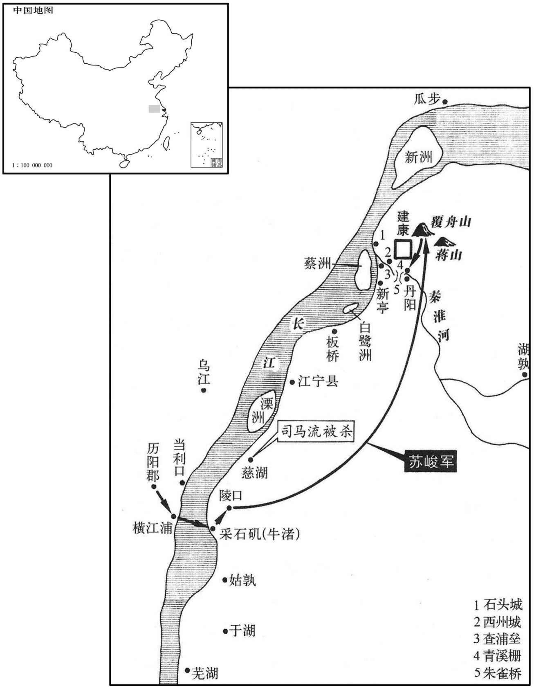
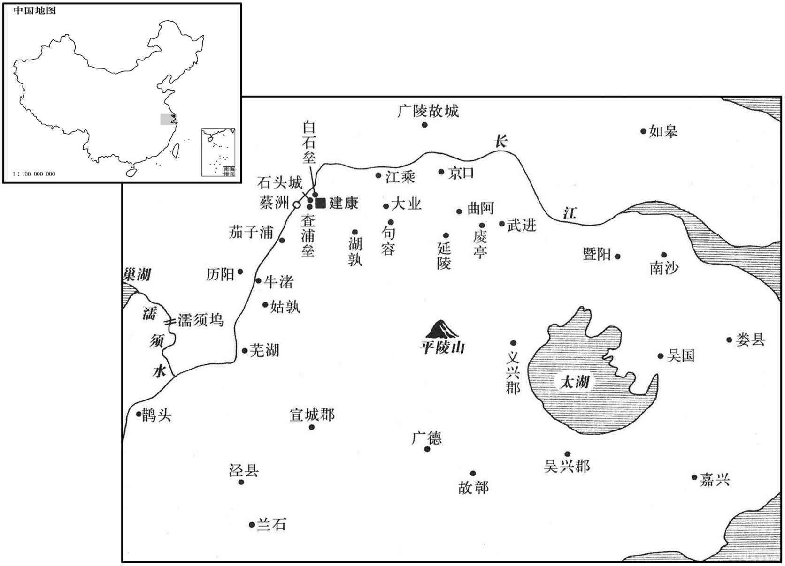
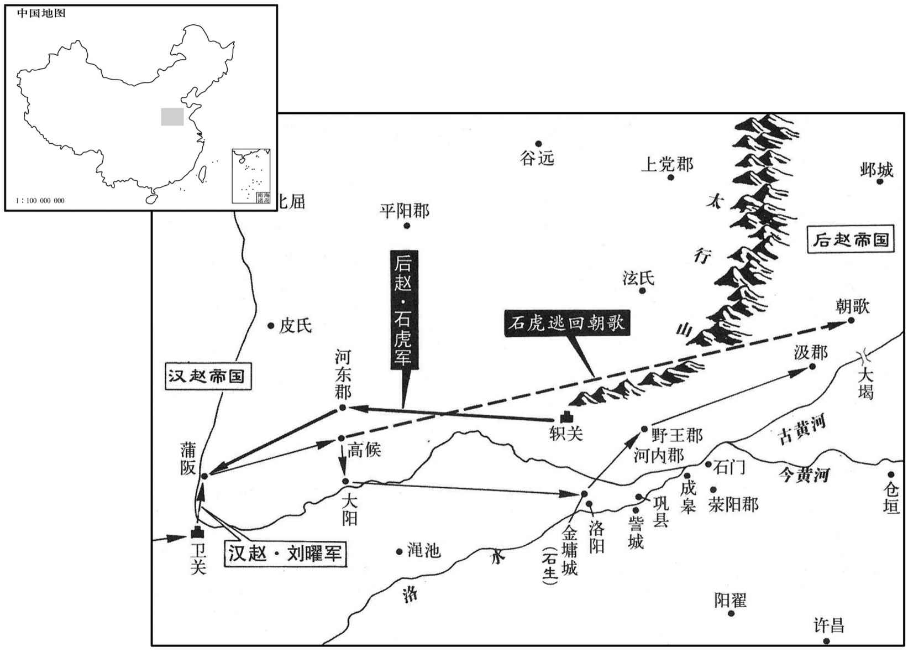
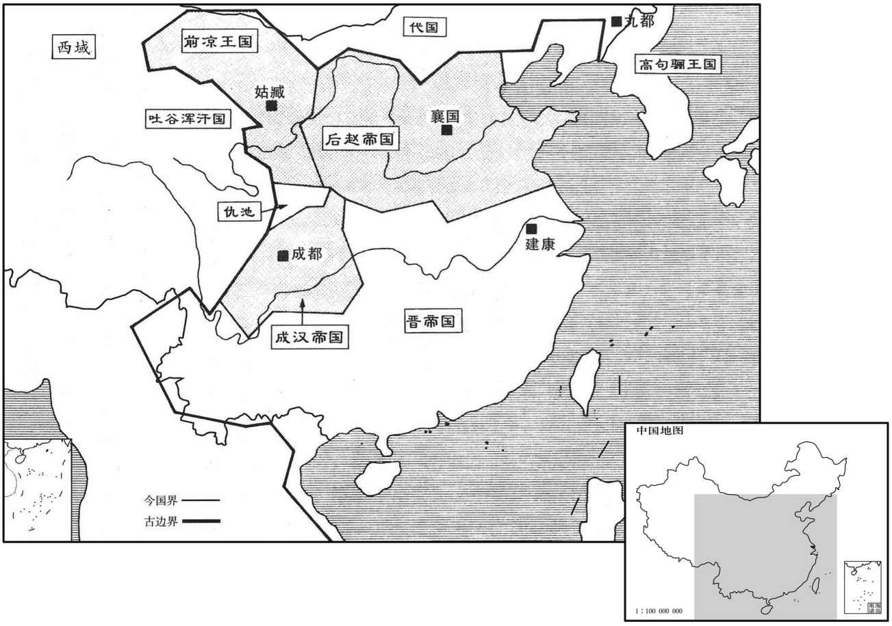

卷次与人物目录 / 卷94
资治通鉴 · 卷第九十四【晋纪十六】
公元328年至公元331年 · 原文、白话与胡三省注
本页按胡注本编排保存全卷内容。白话采用本站所据译本，未可靠对应的内容另列说明；事件标题用于定位，并非原书文字。
本卷共99段原文，99段有译文对应，0段缺译或待核对。
卷第九十四【晋纪十六】起着雍困敦（戊子），尽重光单阏（辛卯），凡四年。
卷首原文与注释
显宗皇帝上之下
公元328年 · 晋显宗皇帝咸和三年
咸和三年〔（戊子、三二八）〕
上传原文的注释括号有异常，字符原样保留；无法可靠划分的段落默认全文显示。
本年事件索引（现代整理）
- 温峤入援建康，驻军寻阳
- 韩晃袭击司马流，司马流兵败身死
- 苏峻率军渡江进逼建康，庾亮失去伏击机会
- 朝士遣家人东避难，刘超独将家人迁入宫中
- 卞壸率军抵抗苏峻，战败身死，苏峻攻入建康焚毁台省
- 羊曼等战死，庾亮败走寻阳
- 苏峻的军队进入台城论军事
- 姑孰被论军事
- 官府拥有布匹二十万匹，金银五千斤
- 锺雅拒绝逃避以尽臣节
- 苏峻矫称诏令大赦天下，惟有庾亮兄弟不在赦免之列
- 苏峻派兵攻吴国内史庾冰，庾冰抵挡不住
- 温峤拒绝未立功先受官，仍拥护庾亮
- 庾太后因忧去世
- 苏峻南下驻军于湖
- 石堪攻取宛城，祖约遇袭逃脱
- 明穆皇后安葬于武平陵
- 庾亮、温峤谋讨苏峻，范汪建议及时进兵
- 温峤请陶侃共讨苏峻，列举祖约、苏峻罪状
- 陶侃召回龚登，温峤致书力劝后陶侃继续进兵
- 郗鉴率军赴难，提出坚壁断粮制敌之策
- 陶侃到寻阳，与庾亮、温峤会师建康
- 苏峻退据石头，分兵抵御讨伐军
- 苏峻逼成帝迁居石头，王导力争不成
- 苏峻命陆晔守留台，驱居民入后苑
- 孔坦投奔陶侃，陶侃任他为长史
- 三吴起义兵救朝廷，虞潭母亲资助军需
- 苏峻派将领抵御东军，虞潭等与之相持
- 毛宝袭夺祖约运米，祖约军因而缺粮
- 陶侃部署各路军队，郗鉴率军与之会合
- 讨伐军水师进至蔡洲，苏峻心生畏惧
- 王彰攻张曜失败，庾亮向陶侃谢罪
- 桓彝拒绝向苏峻投降，城陷后被杀
- 陶侃筑成白石垒，苏峻攻垒不克
- 陶侃命郗鉴、郭默进驻京口，以营垒牵制苏峻
- 魏该去世
- 毛宝击退祖涣、桓抚，救出桓宣
- 祖约诸将暗通后赵，寿春失守
- 石虎攻赵，刘曜击退石虎并乘胜进攻后赵
- 张骏听从索询劝谏，放弃袭取长安
- 苏峻的心腹路永、匡术、贾宁听说祖约败绩
- 陶侃、温峤等人与苏峻长久相持不下
- 温峤的军队粮尽，向陶侃借粮
- 张健、韩晃等猛攻大业，壁垒中缺水
- 陶侃准备救援大业论孝道
- 后赵王石勒想自己进言论军事
- 石勒对徐光对话
- 前赵主刘曜只顾与宠爱的嬖臣饮酒博戏，不体恤士兵
- 中山公石虎带领步兵三万人从城北向西，攻前赵中军
- 刘曜见到石勒论储位
- 这年，成汉的汉献王李骧死
春，正月，温峤入救建康，军于寻阳。〔自武昌东下，军于寻阳。〕
春季，正月，温峤来救援建康，屯军寻阳。
韩晃袭司马流于慈湖；流素懦怯，将战，食炙不知口处，兵败而死。炙，之夜翻，燔肉也。
两版字句有差异，建议核对原文。
韩晃偷袭在慈湖的司马流，司马流素来怯懦，临战时吓得吃烤肉不知道往嘴里放，结果兵败身死。
丁未，苏峻帅祖涣、许柳等众二万人，济自横江，登牛渚，军于陵口。〔牛渚山，在今太平州当涂县北三十里，山下有矶，津渡之处，与和州横江渡相对。陵口，当在牛渚山东北，即东陵口也。帅，读曰率。〕台兵御之，屡败。二月，庚戌，峻至蒋陵覆舟山。〔陵，阜也；蒋陵，蒋山之阜也。覆舟山，形如覆舟，故名。〕陶回谓庾亮曰：「峻佑石头有重戍，不敢直下，必向小丹杨，南道步来；〔汉丹阳郡治宛陵县；武帝太康二年，分丹阳宣城郡，治宛陵，而丹阳移治建业。建业，本汉之秣陵也，吴改曰建业，晋复曰秣陵；至太康三年，分秣陵之水北为建业，后避愍帝讳，改曰建康。元帝南渡，建康置丹阳尹，治于台城西，而丹杨太守旧治秣陵县，俗谓之小丹杨。其路即今太平州取建康之路也。〕宜伏兵邀之，可一战擒也。」亮不从。峻果自小丹杨来，迷失道，夜行，无复部分。〔分，扶问翻。〕亮闻，乃悔之。
丁未（二十八日），苏峻带领祖涣、许柳等士众二万人，渡过横江，登上牛渚，屯军于陵口。朝廷军队抵抗屡败。二月，庚戌（初一），苏峻到达蒋陵的覆丹山。陶回对庾亮说：“苏峻知道石头有重兵戍守，不敢直接前来，必定从小丹杨南道徒步前来，应当埋伏兵众截击，可以一战擒获。”庾亮不听。苏峻果然从小丹杨前来，因迷路，夜间赶行，军队各部混乱。庾亮听说后才感后悔。
朝士以京邑危逼，〔朝，直遥翻。〕多遣家人入东避难，〔建康以吴、会稽为东。难，乃旦翻。〕左卫将军刘超独迁妻孥入居宫内。〔孥，音奴，子也。〕
朝廷士人因京城危急紧迫，大多遣走家人向东避难，只有左卫将军刘超却把妻子儿女迁居宫内。
诏以卞壸都督大桁东诸军事，〔壸，苦本翻。桁，读与航同。〕与侍中锺雅帅郭默、赵胤等军及峻战于西陵。〔据壸传，峻至东陵口，壸与战于陵西，成帝纪作「西陵」。〕壸等大败，死伤以千数。丙辰，峻攻青溪栅；卞壸率诸军拒击，不能禁。峻因风纵人，烧台省及诸营寺署，一时荡尽。〔杜佑曰：宋、齐有三台、五省之号。三台，盖两汉旧名；五省，谓尚书、中书、门下、秘书、集书省也。〕壸背痈新愈，创犹未合，〔创，初良翻。〕力疾帅左右苦战而死；二子眕盱随父后，亦赴散而死。其母抚尸哭曰：「父为忠臣，子为孝子，夫何恨乎！」〔眕，之忍翻。盱，凶于翻。夫，音扶。〕
朝廷下诏让卞壶都督大桁以东军事事务，与侍中钟雅率领郭默、赵胤等人的军队与苏峻在西陵交战。卞壶等人大败，死伤数以千计。丙辰（初七），苏峻进攻青溪栅，卞壶率领各路部队拒敌，无法阻止其攻势。苏峻乘风势纵火，烧毁朝廷的台省及诸营寺官署，一时间荡然无存。卞壶背部的痈肿刚好，伤口尚未愈合，支撑着身体率领左右侍卫苦战至死，两个儿子卞和卞盱跟随在父亲身后，也赴敌战死。他们的母亲抚摸着尸体痛哭说：“父亲是忠臣，儿子是孝子，还有什么遗憾呢！”
丹杨尹羊曼勒兵守云龙门，与黄门侍郎周导、庐江太守陶瞻皆战死。庾亮帅众将陈于宣阳门内，〔帅，读曰率。陈，读曰阵。〕未及成列，士众皆弃甲走，亮与弟怿、条、翼及郭默、赵胤俱奔寻阳。〔依温峤也。〕将行，顾谓锺雅曰：「后事深以相委。」雅曰：「栋折榱崩，谁之咎也！」〔折，而设翻。榱，所追翻。秦曰屋椽，齐鲁曰桷，周曰榱。〕亮曰：「今日之事，不容复言。」〔复，扶又翻。〕亮乘小船，乱兵相掠；亮左右射贼，误中柁工，应弦而倒。〔柁，待可翻。柁以正船，柁工，一船之司命也。射，而亦翻。中，竹仲翻。〕船上咸失色欲散，亮不动，徐曰：「此手何可使着贼！」〔言射不能杀贼而反射杀柁工，自恨之辞也。着，直略翻。〕众乃安。
丹杨尹羊曼领兵戍守云龙门，和黄门侍郎周导、庐江太守陶瞻都战死。庾亮帅士众准备在宣阳门内结阵，还没来得及排成队列，士众都弃甲逃跑，庾亮和兄弟庾怿、庾条、庾翼及敦默、赵胤都逃奔寻阳。临走时回头对钟雅说：“以后的事情深深拜托了。”钟雅说：“户梁折断，屋椽崩毁，这是谁的过失呢！”庾亮说：“今天此事，不容再说。”庾亮乘坐小船，乱兵竞相掠夺抢劫，庾亮的左右侍从用箭射敌，结果误中船上舵手，应声倒仆。船上人都大惊失色，准备逃散。庾亮安坐不动，缓缓地说：“这种手法怎么能让他射中寇贼呢！”大家这才安定。
峻兵入台城，司徒导谓侍中褚翜曰：「至尊当御正殿，君可启令速出。」翜即入上合，躬自抱帝登太极前殿；〔翜，所甲翻。〕导及光禄大夫陵晔、荀崧、尚书张闿共登御床，拥卫帝。〔闿，苦亥翻，又音开。〕以刘超为右卫将军，〔晋志：文帝初置中卫及卫将军，武帝受命，分为左、右卫，以羊琇为士左，赵序为右。〕使与锺雅、褚翜侍立左右，太常孔愉朝服守宸庙。〔朝，直遥翻。〕时百官奔散，殿省萧然。峻兵既入，叱褚翜令下。翜正立不动，呵之曰：「苏冠军来觐至尊，〔峻先以讨沈充功进冠军将军，故称之。冠，古玩翻。〕军人岂得侵逼！」由是峻兵不敢上殿，〔上，时掌翻。〕突入后宫，宫人及太后左右侍人皆见掠夺。峻兵驱役百官，光禄动王彬等皆被捶挞，〔捶，止橤翻。〕令负担登蒋山。〔担，都蓝翻，又徒滥翻。蒋山，即钟山，在今上元县东北十八里。舆地志曰：古曰金陵山，县名因此；又名蒋山，汉末，秣陵尉蒋子文讨贼，战死于此，吴太帝为立庙，子文祖讳锺，因改曰蒋山。余谓孙权祖亦讳锺，当因是改也。〕裸剥士女，〔裸，鲁果翻。〕皆以坏席苫草自鄣，无草者坐地以土自覆；哀号之声，震动内外。〔苫，诗廉翻。覆敷救翻；下同。号，户刀翻。〕
苏峻的军队进入台城，司徒王导对侍中褚说：“皇上应当在正殿，你可发令让他急速出来。”褚立即进入内室，亲自抱着成帝登上太极前殿。王导及光禄大夫陆晔、荀崧、尚书张一同登上御床，护卫成帝。任刘超为右卫将军，让他和钟雅、褚侍立在左右，太常孔愉则穿着朝服守护宗庙。当时百官逃奔离散，宫殿、朝省悄然无声。苏峻的兵众进来后，叱令褚让他退开。褚正立不动，呵斥他们说：“苏峻来觐见皇上，军人岂能侵犯逼近！”因此苏峻的士兵不敢上殿，冲进后宫，宫女及太后的左右侍人都被掠夺。苏峻的士兵驱赶百官服劳役，光禄勋王彬等都被棍捶鞭挞，命令他们担着担子登蒋山。又剥光成年男女的衣物，这些人都用破席或苫草自相遮掩，没有草席的人就坐在地上用土把自己身体盖住，哀哭号叫的声音，震荡于京城内外。
初，姑孰既陷，尚书左丞孔坦谓人曰：「观峻之势，必破台城，自非战士，不须戎服。」及台城陷，戎服者多死，白衣者无他。
当初，姑孰被攻陷之后，尚书左丞孔坦对人说：“看苏峻的势头，必定会攻破台城，我从来不是士兵，不需要军服。”等到台城被攻陷，穿军服的人大多死亡，不着军服者倒没什么。

时官有布二十万匹，金银五千斤，钱亿万，绢数万匹，他物称是，〔言他物与布金银钱绢相称也。称，尺证翻。〕峻尽费之；太官惟有烧余米数石以供御膳。
当时官府拥有布匹二十万匹，金银五千斤，钱亿万，绢数万匹，其他物品价值与此相当，苏峻尽数耗费光，掌管皇帝饮食的太官只有用大火烧剩下的数石粮米，以供成帝御膳。
或谓锺曰：「君性亮直，必不容于寇雠，盍早为之计！」雅曰：「国乱不能匡，君危不能济，各遁逃以求免，何以为臣！」
有人对钟雅说：“你禀性诚信坦直，必定不被寇仇所容，何不早作打算。”钟雅说：“国家的祸乱不能匡正，君王的危殆不能挽救，各自遁逃以求免祸，这还怎么当人臣呢！”
丁巳，峻称诏大赦，惟庾亮兄弟不在原例。〔不在见赦之例。〕以王导有德望，犹使以本官居己之右。祖约为侍中、太尉、尚书令，峻自为骠骑将军、录尚书事，〔骠，匹妙翻。〕许柳为丹杨尹，马雄为左卫将军，祖涣为骁骑将军。〔骁，坚尧翻。〕弋阳王羕诣峻，称述峻功，峻复以羕为西阳王、太宰、录尚书事。〔羕降爵见上卷咸和元年。羕，余亮翻。〕
丁巳（初八），苏峻矫称诏令大赦天下，惟有庾亮兄弟不在赦免之列。认为王导素有德行和名望，还让他保持原职，位居自己之上。祖约任侍中、太尉、尚书令，苏峻自任骠骑将军、录尚书事，许柳任丹杨尹，马雄任左卫将军，祖涣任骁骑将军。弋阳王司马拜见苏峻，称述苏峻的功德，苏峻又让司马当西阳王、太宰、录尚书事。
峻遣兵攻吴国内史庾冰，冰不能御，弃郡奔会稽，〔时以吴郡为吴国，太守为内史。会，工外翻。〕至浙江，峻购之甚急。吴铃下卒引冰入船，以蘧蒢覆之，吟啸鼓枻，泝流而去。〔蘧，求于翻。蒢，陈如翻。说文曰：蘧篨，竹席也。余谓从「艹」者，今芦壌也。枻，以制翻。楫谓之枻，泝，苏故。逆流曰泝。〕每逢逻所，逻所，谓津要置逻卒之所。逻，郎佐翻。〕辄以杖叩船曰：「何处觅庾冰，庾冰正在此。」人以为醉，不疑之，冰仅免。峻以侍中蔡谟为吴内史。
两版字句有差异，建议核对原文。
苏峻派兵进攻吴国内史庾冰，庾冰抵挡不住，放弃郡国逃奔会稽。到浙江时，苏峻重赏搜捕他，十分急迫。吴国的侍从、门卒带领庾冰进船，把他用芦席覆盖起来，呤啸着摇动船浆，逆流而上。每逢遇到巡查哨所，就用杖叩击船身说：“何处寻觅庾冰？庾冰就在这里。”众人认为他喝醉了，毫不怀疑，庾冰因此幸免。苏峻让侍中蔡谟出任吴国内史。
温峤闻建康不守，号恸；〔号，户刀翻。〕人有候之者，悲哭相对。庾亮至寻阳宣太后诏，以峤为骠骑将军、开府仪同三司，又加徐州刺史郗鉴司空。〔郗，丑之翻。〕峤曰：「今日当以灭贼为急，未有功而先拜官，将何以示天下！」遂不受。峤素重亮，亮虽奔败，峤愈推奉之，分兵给亮。
温峤听说建康失守，号啕痛哭。有人前往探问，也是相对悲泣。庾亮到寻阳后宣谕太后诏令，任温峤为骠骑将军、开府仪同三司，又授予徐州刺史郗鉴为司空。温峤说：“今天应当首先翦灭叛贼，尚未建功却先授官，还怎么示范天下！”于是推辞不接受，温峤素来看重庾亮，庾亮虽然战败奔逃，温峤却更加推重奉承他，分出部分兵力交给庾亮。
三月，丙子，庾太后以忧崩。
三月，丙子（疑误），庾太后因忧愁驾崩。
苏峻南屯于湖。
苏峻向南屯兵于湖。
夏，四月，后赵将石堪攻宛，南阳太守王国降之；〔宛，于元翻。降，户江翻。〕遂进攻祖约军子淮上。约将陈光起兵攻约，约左右阎秃，貌类约，〔秃，吐谷翻。〕光谓为约而擒之，约踰垣获免。光奔后赵。
夏季，四月，后赵将领石堪攻宛，南阳太守王国投降；石堪随即进攻驻于淮水岸边的祖约。祖约部将陈光发兵攻击祖约，祖约的侍从闫秃，相貌与祖约相像，陈光以为是祖约，把他擒获，祖约越墙逃脱。陈光逃奔后赵。
壬申,葬明穆皇后于武平陵。
壬申（二十四日），明穆皇后入葬武平陵。
庾亮、温峤将起兵讨苏峻，而道路断绝，不知建康声闻。〔闻，音问。〕会南阳范汪至寻阳，言「峻攻令不壹，贪暴纵横，〔横，户孟翻。〕灭亡已兆，虽强易弱，〔易，以豉翻。〕朝廷有倒悬之急，宜时进讨。」峤深纳之。亮辟汪参护军事。
庾亮、温峤准备起兵讨伐苏峻，但道路阻断，不知道建康的消息。适逢南阳人范汪到寻阳，说：“苏峻政令混乱不一，贪婪强暴，肆无忌惮，已显现出灭亡的征兆，虽然暂时强大，但很容易转化为弱小，朝廷到了千钧一发的危急时刻，应当及时进攻讨伐。”温峤深以为然。庾亮征召范汪为参护军事。
亮、峤互相推为盟主；峤从弟充曰：〔从，才用翻。考异曰：晋春秋作「从兄」，今从晋书峤传。〕「陶征西位重兵强，〔侃时为征西大将军、都督荆、湘、雍、梁，专制上流。〕宜共推之。」峤乃遣督护王愆期诣荆州，邀陶侃与之同赴国难。〔难，乃旦翻；下同。〕侃犹以不豫顾命为恨，〔事见上卷咸和元年。〕答曰：「吾疆埸外将，不敢越局。」〔谓内辅外御，各有局分，不敢踰越也。将，即亮翻。〕峤屡说，不能回；〔说，输芮翻。〕乃顺侃意，遣使谓之曰：「仁公且守，〔汉、魏以来，率呼宰辅、岳牧为明公；今峤呼侃为仁公，盖取天下归仁之义，言晋之征镇皆归重于侃也。使，疏吏翻；下同。〕仆当先下。」使者去已二日，平南参军荥阳毛宝〔峤为平南将军，，以宝为参军。〕别使还，闻之，〔还，从宣翻，又如字。〕说峤曰：「凡举大事，当与天下共之。师克在和，不宜异同。〔左传：楚鬬廉曰：师克在和，不在众也。〕假令可疑，犹当外示不觉，况自为携贰邪！宜急追信改书，〔信，即使也。〕言必应俱进；若不及前信，当更遣使。」峤意悟，即追使者改书；侃果许之，遣督护龚登帅兵诣峤。〔帅，读曰率。〕峤有众七千，于是列上尚书，〔以侃为盟主，与亮、峤列名上之尚书。上，时掌翻。〕陈祖约、苏峻罪状，移告征镇，洒泣登舟。
庾亮、温峤相互推举对方为盟主，温峤的堂弟温充说：“陶侃职位重要，兵力强盛，应当共同推举他为盟主。”温峤便派遣督护王愆期到荆州，邀请陶侃和自己同赴国难。陶侃仍然因为未能参与接受遗诏怀恨在心，回答说：“我是守戍边疆的将领，不敢逾越职分。”温峤多次劝说，不能使他回心转意。温峤于是顺应陶侃的心意，派使者对他说：“仁公暂且按兵不动，我当先行进讨。”使者出发已有两天，平南参军荥阳人毛宝出使别处归来，听说此事，劝说温峤说：“凡是干大事，应当和天下人共同参与。军队取胜在于和同，不应当有所别异。即使有可疑之处，尚且应当对外表现出无所察觉，何况是自己显露离心呢！应当急速追回信使改写书信，说明一定要相互应从，共同进发。如果赶不上先前的信使，应当重新派遣使者。”温峤心中醒悟，当即追回使者改写书信，陶侃果然应许，派督护龚登率军见温峤。温峤有士众七千人，于是列名上呈尚书，陈述祖约、苏峻的罪状，传告各地方长官，洒泪登上战船。
陶侃复追龚登还。峤遗侃书曰：「夫军有进而无退，可增而不可减。近已移檄远近，言于盟府，〔盟府，谓侃府也；侃为盟主，故称为盟府。复，扶又翻。遗，于季翻。〕刻后月半大举，诸郡军并在路次，惟须仁公军至，便齐进耳。仁公今召军还，疑惑远近，成败之由，将在于此。仆才轻任重，实凭仁公笃爱，远禀成规；至于首启戎行，〔行，户刚翻。诗；元戎十乘，以先启行。〕不敢有辞，仆与仁公，如藐尾相卫，唇齿相依也。恐或者不达高旨，将谓仁公缓于讨贼，此声难追。仆与仁公并受方岳之任安危休戚，理既同之。且自顷之顾，绸缪往来，情深义重，〔绸，除留翻；缪，莫彪翻；缠绵也。〕一旦有急，亦望仁公悉众见救，况社稷之难乎！今日之忧，岂惟仆一州，文武莫不翘首企足以望侃兵之来。难，乃旦翻。〕假令此州不守，约、峻树置官长于此，〔此，谓江州也。长，知两翻。〕荆、楚西逼强胡，东接逆贼，因之以饥馑，将来之危，乃当甚于此州之今日也。仁公进当为大晋之忠臣，参桓、文之功；退当以慈父之情，雪爱子之痛。〔谓侃子瞻为峻所杀。〕今约、峻凶逆无道，痛感天地，人心齐壹，咸皆切齿。今之进讨，若以石投卵耳；苟复召兵还，是为败于几成也。〔复，扶又翻。几，居希翻。〕愿深察所陈！」王愆期谓侃曰：「苏峻，豺狼也，如得遂志，四海虽广，公宁有容足之地乎！」侃深感悟，即戎服登舟。瞻丧至不临，〔临，力鸩翻。〕昼夜兼道而进。
陶侃又召龚登回来。温峤给陶侃写信说：“军队能进不能退，能增多而不能减少。近来已经将檄文传播于远近，呈告您的盟府，约定下一次半月时分大举兴兵，各郡军队都已上路，只等您的军队到达，便一同进发了。您现在把军队召回，使远近之人感到疑惑，成败的根由便将决定于此。我才能浅薄却责任重大，实在需要凭仗您的厚爱，遥遵您的成规。至于说到率先启行充当先锋，我不敢有二话，我与您如同首尾相卫、唇齿相依。惟恐有人不理解您高深的意旨，将会认为您不急于讨伐叛贼，这种舆论一旦形成则难以弥补。我和您都担负着地方统帅的职责，安危休戚，按理应当共同承受。况且自从最近交往以来，来往频繁，情深义重，一旦有急难，也希望您率兵相救，何况是国家的危难呢！今天的忧患，岂只是我这一州，文武百官谁不对您企足翘首期待？假使此州保不住，祖约、苏峻在此设置官长，荆楚西部临近强大的胡寇，东部与叛贼相临，再加上连年饥馑，将来的危殆，就会远远超过此州的今天。您进，当会成为大晋的忠臣，与齐桓公、晋文公的功绩相匹；退，则应当以慈父的情爱，去雪爱子被杀的痛楚。如今祖约、苏峻凶逆无道，造成的罪孽震动天地，人心一致，都切齿痛恨。现在的进攻讨伐，犹如以石投卵罢了。倘若再召回军队，这是在几乎成功之时自己制造失败。期望能深切体察我所说的这一切。”王愆期对陶侃说：“苏峻是豺狼，如果让他得志，天下虽大，您难道能有立足之地吗！”陶侃深深感悟，当即穿上作战服装登船。儿子陶瞻的丧礼也不参加，日夜兼行赶来。
郗鉴在广陵，城孤粮少，逼近胡寇，〔近，其靳翻。〕人无固志。得诏书，即流涕誓众，入赴国难，将士檃奋。〔难，乃旦翻。将，即亮翻。〕遣将军夏侯长等间行谓温峤曰：「或闻贼欲挟天子东入会稽，当先立营垒，屯据要害，既防其越逸，又断贼粮运，〔间，古苋翻。断，丁管翻。〕然后清野坚壁以待贼。贼攻城不拔，野无所掠，东道既断，粮运自绝，必自溃矣。」峤深以为然。〔晋都建康，粮运皆仰三吴，故欲先断东道。王敦、苏峻之乱，匡复之谋，郗鉴为多。〕
郗鉴在广陵，孤城缺粮，挨近胡寇，人心不稳。得到诏书后，当即流着眼泪誓师，来赴国难，将士们人人奋勇争先。郗鉴派将军夏侯长等微行前来对温峤说：“有人听说叛贼准备挟迫天子向东到会稽，应当事先设立营帐壁垒，占据要害之地，即可防止他逃逸，又能切断叛贼的粮食运输，然后再坚壁清野，坐待叛贼。叛贼攻城不能取胜，旷野又无所劫掠，东边的道路既然阻断，粮米输运自然断绝，必定不战自溃。”温峤认为很对。
五月，陶侃率众至寻阳。议者咸谓侃欲诛庾亮以谢天下；亮甚惧，用温峤计，诣侃拜谢。侃惊，止之曰：「庾元规乃拜陶士行邪！」〔陶侃，字士行。〕亮引咎自责，风止可观，侃不觉释然，曰：「君侯修石头以拟老子，〔见卷咸和元年。〕今日反见求邪！」即与之谈宴终日，遂与亮、峤同趣建康。〔趣，七喻翻。〕戎卒四万，旌旗七百余里，钲鼓之声，震于远近。
五月，陶侃率领士众到达寻阳。论者都说陶侃准备诛杀庾亮向天下人谢罪，庾亮甚为恐惧，便采用温峤的计谋，去见陶侃叩拜谢罪。陶侃大吃一惊，制止他说：“庾元规竟然来叩拜我吗！”庾亮援引过错，自我责备，风度举止很不错，陶侃不知不觉放心开怀，说：“您当年缮修石头城来对付老夫，今天倒反来见我有所求吗！”随即和他谈笑宴饮一整天，便与庾亮、温峤一同赶赴建康。共有士卒四万人，旌旗延绵七百多里，钲鼓之声震动遐迩。
苏峻闻西方兵起，用参军贾宁计，自姑孰还据石头，分兵以拒侃等。
苏峻听说西方起兵，采纳参军贾宁的计谋，从姑孰返回占据石头，分兵抗拒陶侃等人。
乙未，峻逼迁帝于石头，司徒导固争，不从。帝哀泣升车，宫中恸哭。时天大雨，道路泥泞，〔泞，乃定翻，淖也。〕刘超、锺雅步侍左右，峻给马，不肯乘，而悲哀慷慨。峻闻而恶之，然未敢杀也。〔恶，乌路翻。〕以其亲信许方等补司马督、殿中监，外托宿卫，内实防御超等。峻以仓屋为帝宫，日来帝前肆丑言。刘超、锺雅与右光禄大夫荀崧、金紫光禄大夫华恒、〔左、右光禄大夫，金章紫绶；光禄大夫，银章青绶；加金章紫绶者，谓之金紫光禄大夫。华，户化翻。恒，户登翻。〕尚书荀邃、侍中丁潭侍从，不离帝侧。〔从，才用翻。离，力智翻。〕时饥馑米贵，峻问遗，超一无所受。缱绻朝夕，〔遗，于季翻。缱，诘战翻，又去演翻；绻，区愿翻。缱绻，反复不相离也。孔颖达曰：缱绻，牢固相着之意。左传曰：缱绻从公，毋通内外。〕臣节愈恭；虽居幽厄之中，超犹启帝，授孝经、论语。
乙未（十八日），苏峻逼迫成帝迁居石头，司徒王导极力争辩，苏峻不听。成帝哀哭着登上车舆，宫中一片恸哭。当时天下大雨，道路泥泞，刘超、钟雅徒步侍从于左右，苏峻给他们马匹也不肯乘坐，悲哀慷慨。苏峻听说后憎恶于心，但没敢杀害。苏峻让亲信许方等人补任司马督、殿中监等职，对外说是宿卫 ，对内其实是防备刘超等人。苏峻用库房作为成帝宫室，每天在成帝面前大放厥词。刘超、钟雅和右光禄大夫荀崧、金紫光禄大夫华恒、尚书荀邃、侍中丁潭侍卫随从，不离成帝左右。当时因饥馑米价昂贵，苏峻赠送问慰，刘超纤毫不受。朝夕不离成帝身边，行臣子礼节愈加恭谨。虽然处于困厄之中，刘超仍然为成帝启蒙，讲授《孝经》和《论语》。
峻使左光禄大夫陵晔守留台，逼迫居民，尽聚之后苑；使匡术守苑城。
苏峻让左光禄大夫陆晔守卫禁城，逼迫居民全部聚居在后苑，让匡术据守苑城。
尚书左丞孔坦奔陶侃，侃以为长史。
尚书左丞孔坦投奔陶侃，陶侃任他为长史。
初，苏峻遣尚书张闿权督东军，司徒导密令以太后诏谕三吴吏士，〔汉置吴郡；吴分吴郡置吴兴郡；晋又分吴兴、丹杨置义兴郡，是为三吴。郦道元曰：世谓吴郡、吴兴、会稽为三吴。杜佑曰：晋、宋之间，以吴郡、吴兴、丹杨为三吴。〕使起义兵救天子。会稽内史王舒以庾冰行奋武将军，使将兵一万，西渡浙江；〔将，即亮翻；下同。〕于是吴兴太守虞潭、吴国内史蔡谟、前义兴太守顾众等皆举兵应之。潭母孙氏谓潭曰：「汝当舍生取义，勿以吾老为累！」〔累，力瑞翻。〕尽遣其家僮从军，鬻其环佩以为军资。谟以庾冰当还旧任，即去郡以让冰。
当初，苏峻派尚书张暂时督察东部军事，司徒王导密令他用太后诏书谕示三吴的官吏士民，让他们发动义兵救天子。会稽内史王舒让庾冰任行奋武将军职，领兵一万人，向西渡过浙江，于是吴兴太守虞潭、吴国内史蔡谟、原义兴太守顾众等人都发兵响应。虞潭母亲孙氏对虞潭说：“你应当舍生取义，不要因我年老受拖累。”尽数遣送自己的家僮从军，典卖自己的耳环佩玉作为军资。蔡谟认为庾冰应当恢复吴国内史的旧职，便离开吴国，把职位让给庾冰。
苏峻闻东方兵起，遣其将管商、张健、弘徽等拒之；虞潭等与战，互有胜负，未能得前。
苏峻听说东方起兵，派部将管商、张健、弘徽等拒敌。虞潭等人和他们交战，互有胜负，不能前进。
陶侃、温峤军于茄子浦；峤以南兵习水，苏峻兵便步，〔南兵，谓侃、峤之兵。便步，谓便于步战。〕令：「将士有上岸者死！」〔上，时掌翻。〕会峻送米万斛馈祖约，约遣司马桓抚等迎之。毛宝帅千人为峤前锋，〔帅，读曰率；下同。〕告其众曰：「兵法，『军令有所不从』，岂可视贼可击，不上岸击之邪！」乃擅往袭抚，悉获其米，斩获万计，约由是饥乏。峤表宝为庐江太守。
陶侃、温峤屯军于茄子浦。温峤因南方士兵熟悉水战，而苏峻的士卒则以步战见长，便下令：“将士有上岸的处死！”适逢苏峻赠送粮米一万斛给祖约，祖约派司马桓抚等人相迎。毛宝率领一千人当温峤的先锋，告谕士兵说：“兵法说：‘军令有所不从’，怎能眼见可以攻击叛贼，却不上岸攻击呢！”于是擅自前往偷袭桓抚，尽数劫获粮米，斩首万人左右，祖约军队因此饥饿缺粮。温峤上表推荐毛宝任庐江太守。
陶侃表王舒监浙东军事，虞潭监浙西军事，〔监，工衔翻。〕郗鉴都督扬州八郡诸军事；令舒、潭皆受鉴节度。鉴帅渡江，与侃等会于茄子浦，〔类篇：茄，求加翻；菜名，子可食。茄叶似蒿蓼叶而青，子熟于夏秋之间，大如秤棰，有紫色者，有白色者，及其熟也，色正黄。盖其地宜茄子，人多于此树艺，因以名浦。〕雍州刺史魏该亦以兵会之。〔雍，于用翻。〕
陶侃表荐王舒监察浙东军事，虞潭监察浙西军事，郗鉴都督扬州八郡诸军事，令王舒、虞潭都听从郗鉴的调度。郗鉴率士兵渡过长江，与陶侃等在茄子浦会合。雍州刺史魏该也领兵相会。
丙辰，侃等舟师直指石头，至于蔡洲；侃屯查浦，〔蔡洲，在石头西岸；查浦，在大江南岸，直秦淮口。〕峤屯沙门浦。峻登烽火楼，望见士众之盛，有惧色，谓左右曰：「吾本知温峤能得众也。〕
丙辰（疑误），陶侃等人的水军直指石头，到达蔡州。陶侃屯军查浦，温峤屯军沙门浦。苏峻登上烽火楼，望见敌方士众之多，面有惧色，对左右侍从说：“我本来就知道温峤能得众心。”
庾亮遣督护王彰搫峻党张曜，反为所败。亮送节传以谢侃。〔败，补迈翻。传，株恋翻。〕侃答曰：「古人三败，〔谓鲁将曹沬也。〕君侯始二；当今事急，不宜数尔。」〔言不宜数数如此。数，所角翻。〕亮司马陈郡殷融诣侃谢曰：「将军为此，非等所裁。」王彰至曰：「彰自为之，将军不知也。」侃曰：「昔殷融为君子，王彰为小人；今王彰为君子，殷融为小人。」
庾亮派督护王彰突袭苏峻的门党张曜，反而被张曜击败。庾亮送去符节向陶侃谢罪，陶侃回答说：“古人曾三次遭败，您才有二次。不过当今形势急迫，不能次次这样。”庾亮的司马、陈郡人殷融去见陶侃谢罪说：“这是庾将
军造成的，不是我们出的主意。”王彰来后则说：这是我自己造成的，庾将军不知道。”陶侃说：“过去殷融是君子，王彰是小人；现在王彰是君子，殷融则是小人了。”

宣城内史桓彝，闻京城不守，慷慨流涕，进屯泾县。〔彝自广德进屯泾县。〕时州郡多遣使降苏峻，〔使，疏吏翻。降，户江翻。〕裨惠复劝彝宜且与通使，以纾交至之祸。〔纾，缓也。交至之祸，言州郡多降，峻兵将四合而交至也。复，扶又翻。〕彝曰：「吾受国厚恩，义在致死，焉能忍耻与逆臣通问！〔焉，于虔翻。〕如其不济，此则命也。」彝遣将军俞纵守兰石，〔兰石，在泾县东北。〕峻遣其将韩晃攻之。纵将败，左右劝纵退军。纵曰：「吾受桓侯厚恩，当以死报。吾庂不可负桓侯，犹桓侯之不负国也。」遂力战而死。晃进军攻彝，六月，城陷，执彝，杀之。
宣城内史桓彝听说京城失守，慷慨流泪，进军屯驻泾县。当时州郡大多派使者向苏峻投降，裨惠又劝桓彝，应当暂且与苏峻通使，以舒缓将会交至而来的灾祸。桓彝说：“我蒙受国家的重恩，按道义应当效死。怎能忍受耻辱和逆臣通使问慰！如果事情不能成功，这就是命了。”桓彝派将军俞纵驻守兰石，苏峻派部将韩晃攻击，俞纵将要战败，左右侍从劝俞纵退军。俞纵说：“我蒙受桓公厚恩，应当以死报答。我不能辜负桓公，犹如桓公不辜负国家。”于是力战而死。韩晃进军攻打桓彝，六月，城被攻破，桓彝被擒获，遇害。
诸军初至石头，即欲决战，陶侃曰：「贼众方盛，难与争锋，当以岁月，智计破之。」既而屡战无功，监军部将李根请筑白石垒，〔是时同盟诸将无监军事者，窃意李根盖郗盐军部将也。前史既逸「郗」字，后人遂改「鉴」为「监」。白石垒，在石头东北，峻极险固。杜佑曰：白石里，在台城西，宋武帝大明四年为蚕所，置大殿于此。〕侃从之，夜，筑垒，至晓而成。闻峻军严声，〔闻峻军击鼓严队之声。〕诸将咸惧其来攻。孔坦曰：「不然。若峻攻垒，必须东北风急，令我水军不得往救；今天清静，贼必不来。所以严者，必遣军出江乘，掠京口以东矣。」已而果然。侃使庾亮以二千人守白石，峻帅步骑万余四面攻之，不克。〔帅，读曰率。〕
各路军队刚到石头，就想和苏峻决战。陶侃说：“叛贼气势正盛，难以与之争锋。应当待以时日，用智谋战败他。”此后，多次交战无所建树，监军部将李根请求修筑白石垒，获陶侃同意后，连夜筑垒，至天明即成。传来苏峻军队击鼓整队的声音，众将都惧怕他们前来攻击。孔坦说：“不会。如果苏峻进攻白石垒，必须等待东北风大，使我方水军无法来救。今天天晴无风，贼寇必定不来。他们之所以整队，一定是派军队由江乘出击，攻掠京口以东地区。”结果果真如此。陶侃派庾亮率二千人据守白石，苏峻率步兵、骑兵一万多人四面围攻，未能攻克。
王舒、虞潭等数峻兵战，不利。〔数，所角翻。〕孔坦曰：「本不须召郗公，遂使东门无限，今宜遣还，虽晚，犹胜不也。」〔言虽遣还之晚，犹胜不遣还也。〕侃乃令鉴与后将军郭默还据京口，立大业、曲阿、庱亭三垒以分峻之兵势，〔曲阿，秦云阳县也，前汉属会稽郡，后汉属吴郡，晋属毗陵郡。大业，里名，在曲阿北。丁度曰：庱亭，在吴兴。庱，丑升翻。裴松之曰：庱，摅陵翻。〕使郭默守大业。
王舒、虞潭等多次与苏峻军队接战失利，孔坦说：“本来不必要召来郗鉴，结果使东门失去防卫。现在应当派遣他回军，虽然晚点，还是胜过不去。”陶侃便令郗鉴和后将军郭默回军占据京口，建立大业、曲阿、亭三座壁垒，使苏峻兵力分散。让敦默据守大业。
壬辰，魏该卒。
壬辰（十五日），魏该去世。
祖约遣祖涣、桓抚袭湓口；〔湓口，在寻阳，今江州德化县西一里有湓浦。〕陶侃闻之，将自击之。毛宝曰：「义军恃公，公不可动，宝请讨之。」侃从之。涣、抚过皖，因攻谯国内史桓宣。〔宣时屯皖县马头山。皖，户版翻。〕宝往救之，为涣、抚所败。〔败，补迈翻。〕箭贯宝髀，彻鞍，〔彻，敕列翻。〕宝使人蹋鞍拔箭，血流满跋。〔跋，许戈翻。〕还击焕、抚，破走之，宣乃得出，归于温峤。宝进攻祖约军于东关，拔合肥戍；会峤召之，复归石头。
祖约派祖涣、桓抚偷袭湓口，陶侃听说后，准备亲自领军回击。毛宝说：“义军恃仗您领导，您不能出动，我请求去征讨。”陶侃同意了。祖涣、桓抚经过皖，顺势攻击谯国内史桓宣。毛宝前往救援，被祖涣、桓抚打败。敌箭射穿毛宝髀骨，插在马鞍上，毛宝让人用脚踏住马鞍拔箭，血流满靴。毛宝回头攻击祖涣、桓抚，把他们打败逃跑，桓宣这才得以脱困，归依温峤。毛宝攻击在东关的祖约军队，攻取合肥戍。适逢温峤召请他，又回归石头。
祖约诸将阴与后赵通谋，许为内应。后赵将石聪、石堪引兵济淮，攻寿春。秋，七月，约众溃，奔历阳，聪等虏寿春二万余户而归。
祖约手下诸位将领私下与后赵勾结，许诺充当内应。后赵将领石聪、石堪领兵渡过淮水，进攻寿春。秋季，七月，祖约的士众溃逃，投奔历阳。石聪等掳掠寿春民众二万多户返回。
后赵中山公虎、帅众四万自轵关西入，击赵河东，〔轵关，在河内轵县。帅，读曰率。〕应之者五余县，遂进攻蒲阪。赵主曜遣河间王述发氐、羌之众屯秦州以备张骏、杨难敌，自将中外精锐水陵诸军以救蒲阪，自卫关北济；〔晋书地理志，汲郡汲县有卫关。〕虎惧，吊退。曜追之，八月，及于高候；〔杜佑曰：今绛州闻喜县北有高候原。〕与虎战，大破之，斩石瞻，枕尸二百余里，〔枕，职鸩翻。〕收其资仗亿计。虎奔朝歌。〔杜佑曰：卫州卫县，汉朝歌县。纣都朝歌，在今县西。〕曜济自大阳，〔大阳属河东郡。应劭曰：在大河之阳，故曰大阳。唐志，陕州陕县有大阳故关，春秋之茅津也。〕攻石生于金墉，决千金堨以灌之。〔堨，乌葛翻。〕分遣诸将攻汲郡、河内，后赵荥阳太守尹矩、野王太守张进等皆降之。〔野王县自汉以来属河内郡，后赵鈶置郡也。降，户江翻。〕襄国大震。
后赵中山公石虎率士众四万人从轵关西进，攻击前赵的河东，有五十多个县应从，石虎于是进攻蒲阪。前赵主刘曜派河间王刘述调遣氐族、羌族士众屯驻在秦州，防备张骏和杨难敌，自己率领中外精锐的水、陆各军救援蒲阪，从卫关北渡黄河。石虎畏惧，率军退走，刘曜追击。八月，在高候追上石虎，与石虎交战，石虎大败，石瞻被杀，尸体枕籍达二百多里，刘曜缴获的军资上亿。石虎逃奔朝歌。刘曜从大阳渡过黄河，攻击驻守金墉的石生，开决千金的蓄水淹灌他们，又分别派遣诸将进攻汲郡、河内，后赵的荥阳太守尹矩、野王太守张进等都归降刘曜。襄国大为震惊。

张骏治兵，欲乘虚袭长安。理曹郎中索询谏曰：〔理曹郎中，张氏所置，以掌刑狱。索，昔各翻。〕「刘曜虽东征，其子胤守长安，未易轻也。〔易，以豉翻；下同。〕借使小有所获，彼若释东方之图，还与我校；祸难之期未可量也。」〔难，乃旦翻。量，音良。〕骏乃止。
张骏整备军队，想乘虚偷袭长安。理曹郎中索询劝谏说：“刘曜虽然东征，他儿子刘胤防守长安，不能轻视。即使小有所获，但如果刘曜放弃对东方的图谋，回军与我方较量，祸难临头的时候就难以预测了。”张骏这才罢休。
苏峻腹心路永、匡术、贾宁闻祖约败，恐事不济，劝峻尽诛司徒导等诸大臣，更树腹心；〔更，工衡翻。〕峻雅敬导，不许。永等更贰于峻，〔贰者，其心携而两向。〕导使参军袁耽潜诱永使归顺，〔诱，音酉。〕九月，戊申，导携二子与永奔白石。耽，涣之曾孙也。〔袁涣事曹操。〕
苏峻的心腹路永、匡术、贾宁听说祖约败绩，惟恐事情不能成功，劝苏峻尽数杀死司徒王导等各位大臣，另外安置自己的心腹。但苏峻素来敬重王导，不同意杀害他，路永等人便对苏峻怀有二心。王导让参军袁耽私下引诱路永，让他归顺朝廷。九月，戊申（初三），王导携同两个儿子和路永一同逃奔白石垒。袁耽即袁涣的曾孙。
陶侃、温峤等与苏峻久相持不决，峻分遣诸将东西攻掠，所向多捷，人情恟惧。〔恟，许拱翻。〕朝士之奔西军者皆曰：「峻狡黠有胆决，其徒骁勇，所向无敌。〔朝，直遥翻。黠，下八翻。骁，坚尧翻。〕若天讨有罪，则峻终灭亡；止以人事言之，未易除也。」温峤怒曰：「诸君怯懦，乃更誉贼！」〔誉，羊诸翻，称扬之也。〕及累战不胜，峤亦惮之。
陶侃、温峤等人与苏峻长久相持不下，苏峻分别派遣多员将领向东、向西攻伐劫掠，多所获胜，一时人心恐惧不宁。朝廷士人逃到西军的都说：“苏峻狡黠而有胆识，士卒骁勇，所向无敌。倘若上天能讨伐有罪之人，那么他终将灭亡。如果只从人事方面来说，则不易翦除。”温峤发怒说：“这是你们自己怯懦，却去称颂叛贼！”等到多次交战不胜，温峤也心有忌惮。
峤军食尽，贷于陶侃。〔贷，他代翻，借也。〕侃怒曰：「使君前云不忧无良将及兵食，惟欲得老仆为主耳。今数战皆北，良将安在！荆州接胡、蜀二虏，当备不虞；若复无食，〔复，扶又翻。〕仆便欲西归，更思良算，徐来殄贼，不为晚也。」峤曰：「凡师克在和，古之善教也。光武之济昆阳，〔见三十九卷汉淮阳王更始元年。〕曹公之拔官渡，〔见崟十三卷汉献帝建安五年。〕以寡敌众，杖义故也。峻、约小竖，凶逆滔天，何忧不灭！峻骤胜而骄，自谓无前，今挑之战，〔挑，徒了翻。〕可一鼓而擒也。柰何舍垂立之功，设进退之计乎！且天子幽逼，社稷危殆，乃四海臣子肝脑涂地之日。峤等与公并受国恩，事若克济，则臣主同祚；如其不捷，当灰身以谢先帝耳。今之事势，义无旋踵，譬如骑虎，安可中下哉！公若违众独返，人心必沮；沮众败事，义旗将回指于公矣。」〔温峤辞严义正，所以能留陶侃，共成大功。沮，在吕翻。败，补迈翻。〕毛宝言于峤曰：「下官能留陶公。」乃往说侃曰：〔说，输芮翻。〕「公本镇芜湖，为南北势援，前既已下，势不可还。且军政有进无退，非宜整齐三军，示众必死已，亦谓退无所据，终至灭亡。往者杜弢非不强盛，公竟灭之，〔见八十九卷愍帝建兴三年。弢，土刀翻。〕何至于峻，独不可破邪！贼亦畏死，非皆勇健，公可试与宝兵，使上岸断贼资粮；〔上，时掌翻。断，丁管翻。〕若宝不立效，然后公去，人心不恨矣。」侃然之，加宝督护而遣之。竟陵太戭李阳说侃曰：〔惠帝元康九年，分江夏西界立竟陵郡。〕「今大事若不济，公虽有粟，安得而食诸！」侃乃分米五万石以饷峤军。毛宝烧峻句容、湖孰积聚，〔句容、湖孰二县，属丹杨郡。〕峻军乏食，侃遂留不去。
温峤的军队粮尽，向陶侃借粮。陶侃发怒说：“你过去说不愁没有良将和军粮，只是想让我出任盟主罢了。如今数战皆败，良将在哪里！荆州与胡夷、蜀汉二敌接壤，应当对突发之事有所防备，如果再无军粮，我就想西归，重新考虑更好的办法，慢慢再来除灭叛贼，也不算晚。”温峤说：“凡是军队取胜，贵在协同，这是古人的成功经验。汉光武帝横渡昆阳，曹操官渡取胜，以寡敌众，是因为凭仗道义的力量。苏峻、祖约这种小子，凶逆的罪行滔天，何愁不灭！苏峻因屡次取胜而骄傲，自认为所向无敌，现今向他挑战，便可一鼓作气将他擒获，怎么能放弃马上便可获得的成功，作退却的打算呢！况且天子遭到幽禁、逼迫，国家危殆，这正是天下的臣子们肝脑涂地以图报效的时候。我们和您都蒙受国家的恩惠，事情如果能成功，便可君臣同享国家的福运；如不能获胜，则应当粉身碎骨以报答先帝。当今之事，已经义无反顾，犹如骑虎，怎能中途跳下呢！您如果违背众人心愿独自返回，人心必定沮丧，人心沮丧必败，那时义军的大旗将回过头来指向您了。”毛宝对温峤说：“我能让陶公留下”，于是去劝陶侃说：“您本应镇守芜湖，作为南北军队的后援，先前既然已经来此，按情势就不能回头。何况军事规则有进无退，不只是说整肃三军，向士众显示必死的信念，也是说后退无所仰仗，终将至于灭亡。过去杜并非不强盛，您最终将他翦灭，怎么到了苏峻头上，偏偏不能战胜他呢！叛贼也是怕死的，并非个个勇健，您可以试着交给我一些士兵，让我上岸去断绝叛贼的军资口粮，如果我不能建立战功，然后您再离开，众人心中便不会遗憾了。”陶侃答应了他，授予毛宝督护，派他前去。竟陵太守李阳劝说陶侃道：“现在如果大事不成功，您虽有粮米，怎能吃得上呢！”陶侃便发出五万石粮米赠送给温峤军队。毛宝烧毁苏峻在句容、湖孰的军备积蓄，苏峻军队缺粮，陶侃便留下未离开。
张健、韩晃等急攻大业；垒中乏水，人饮粪汁。郭默惧，潜突围出外，留兵守之；郗鉴在京口，军士闻之皆失色。参军曹纳曰：「大业，京之扞蔽也，一旦不守，则贼兵径至，不可当也。请还广陵，以俟后举。」鉴大会僚佐，责纳曰：「吾受先帝顾托之重，正复捐躯九泉，不足报塞。〔复，扶又翻。塞，悉则翻。〕今强寇在近，众心危逼，君腹心之佐，而生长异端，〔长，丁丈翻，今知两翻。〕当何以帅先义众，镇壹三军邪！」〔帅，读曰率；下同。〕将斩之，久乃得释。
张健、韩晃等猛攻大业，壁垒中缺水，众人饮用粪水。郭默恐惧，悄悄突围而出，留下士兵据守。郗鉴在京口，军士们听说后都吃惊失色。参军曹纳说：“大业是京口的屏障，一旦失守，那么贼兵便可直接到此，无法阻挡。请求退回广陵，以待后举。”郗鉴大会僚属佐吏，斥责曹纳说：“我禀受先帝顾命托孤的重任，正思即使捐躯于九泉之下，也不足为报。如今强寇在旁，众心危惧紧张，你是我的心腹佐吏，却滋生异端，我还怎么统帅，引导义士，镇摄号令三军呢！”郗鉴准备将曹纳斩首，许久才释免。
陶侃将救大业，长史殷羡曰：「吾兵不习步战，救大业而不捷，则大事去矣。不如急攻石头，则大业自解。」〔谓急攻苏峻，健、晃必还救之，大业之兵自解。〕侃从之。羡，融之兄也。庚午，侃督水军向石头。庾亮、温峤、赵胤帅步兵万人从白石南上，欲挑战。峻将八千人逆战，〔上，时掌翻。挑，徒了翻。将，即亮翻；下同。〕遣其子硕及其将匡孝分兵先蒲赵胤军，败之。〔蒲，迫也。败，补迈翻。〕峻方劳其将士，〔劳，力到翻。〕乘醉望见胤走，曰：「孝能破贼，我更不如邪！」因舍其众，〔舍，读曰舍。〕与数骑北下突陈，不得入，〔陈，读曰阵。〕将回趋白木陂；马踬，〔踬，陟利翻，跲也。白木陂，在东陵东。趋，七喻翻；下兵趋同。〕侃部将彭世、李千等投之以矛，峻坠马首，脔割之，焚其骨，三军皆称万岁。余众大溃。〔一鼓禽峻，果如温峤之言。〕峻司马任让等共立峻弟逸为主，闭城自守。〔任，音壬。〕温峤乃立行台，布告远近，凡故吏二千石以下，皆令赴台；于是至者云集。韩晃闻峻死，引兵趣石头。管商、弘徽攻庱亭垒，督护李闳、轻车长史滕含击破之。〔轻车长史，轻车将军长史也。〕含，修之孙也。商走诣庾亮降，〔降，户江翻。〕余众皆归张健。
陶侃准备救援大业，长史殷羡说：“我方士兵不熟悉陆战，如果救援大业不能取胜，那么大事便完了。不如猛攻石头，那么大业之围自然会解除。”陶听从了他的建议。殷羡即殷融的兄长。庚午（二十六日），陶侃督领水军开赴石头。庾亮、温峤、赵胤率领步兵万人从白石垒向南，准备挑战。苏峻统帅八千人迎战，派儿子苏硕和部将匡孝分军先行逼近赵胤军队，将其打败。苏峻当时正在犒劳将士，乘着醉意远远望见赵胤败逃，说：“匡孝能败敌，我反倒不如他吗！”于是撇下士众，和数名骑兵向北突击敌阵，但无法突破，准备回身奔向白木陂时，坐骑失足颠踬，陶侃的部将彭世、李千等用矛投射，苏峻坠落马下，被斩首，剐割肢体，骨骸被焚烧，三军将士都高呼万岁。苏峻余部大败。苏峻的司马任让等人共同推立苏峻兄弟苏逸为主公，关闭城门自守。温峤便
没立行台，宣告晓谕远近，凡是朝廷原任官吏爵禄在二千石以下的，都传令他
们赶赴行台报到，于是到达的人有如云集。韩晃听说苏峻已死，领兵奔赴石头。
冬，十一月，后赵王勒欲自将救洛阳，〔将，即亮翻。〕僚佐程遐等固谏曰：「刘曜悬军千里，势不支久。大王不宜亲动，动无万全。」勒大怒，按剑叱遐等出。乃赦徐光，〔光被囚见上卷咸和元年。〕召而谓之曰：「刘曜乘一战之胜，围守洛阳，庸人之情皆谓其锋不可当。曜带甲十万，攻一城而百日不克，师老卒怠，以我初锐击之，可一战而擒也。若洛阳不守，曜必送死冀州，〔后赵都襄国，冀州之地。〕自河已北卷而来，〔卷，读曰卷；下同。〕吾事去矣。程遐等不欲吾行，卿以为何如﹖」对曰：「刘曜乘候之势，不能进临襄国，更守金墉，此其无能为可知也。以大王威略临之，彼必望旗奔败。平定天下，在今一举，不可失也。」勒笑曰：「光言是也。」乃使内外戒严，有谏者斩。命石堪、石聪及豫州刺史桃豹等各统见众会荥阳；〔见，贤遍翻。〕中山公虎进据石门，〔水经注：汉灵帝于敖城西北，垒石为门，以遏浚仪渠口，谓之石门，荥渎受河水，亦有石门。〕勒自统步骑四万趣金墉，济自大堨。〔水经注：石勒袭刘曜，涂出延津，以河冰泮为神灵之助，号是处为灵昌津。骑，奇寄翻。趣，七喻翻。堨，乌葛翻。〕
冬季，十一月，后赵王石勒想自己率兵救援洛阳，僚佐程遐等极力劝谏说：“刘曜孤军深入千里之外，势必不能持久。大王不应当亲自出动，一旦出动难保万全。”石勒大怒，手按佩剑呵叱程遐等人出去。于是赦免徐光的罪过，把他召来对他说：“刘曜凭借一仗的胜利，围攻并占据洛阳，庸人的想法都说他的锋芒不可抵挡。刘曜带领十万甲士，攻打一座城池却一百天不能取胜，军队疲惫、士卒懈怠，用我方精锐的生力军攻击，一战便可擒获他。如果洛阳失守，刘曜必定会进攻冀州，由黄河北边席卷而来，我们就完了。程遐等人不想让我去，您以为怎么样？”徐光回答说：“刘曜乘着在高候战胜石虎的势头，不能进军逼迫襄国，反而据守金墉，由此可知他不会有什么作为。凭着大王您的威风胆略进逼他，他必定是望风败逃。平定天下，就在今天这一战，时机不能错过。”石勒笑着说：“你说的对。”于是让宫室内外戒严，有敢于劝谏的斩首。命令石堪、石聪和豫州刺史桃豹等各自统领现有士众会聚荥阳，又令中山公石虎进军占据石门，石勒自己率步、骑兵四万人赶赴金墉，从大渡过黄河。
勒谓徐光曰：「曜盛兵成皋关，上策也；阻洛水，其次也；坐守洛阳，此成擒耳。」十二月，乙亥，后赵诸军集于成皋，步卒六万，骑二万七千。勒见赵无守兵，大喜，举手指天复加额曰：「天也！」〔复，扶又翻。〕卷甲衔枚，诡道兼行，出于巩、訾之间。〔巩县，属河南郡，有东訾城。左传，单子取訾。杜预曰，在巩县西南。晋地道记曰，在之东。訾，子斯翻。〕
石勒对徐光说：“刘曜如果屯军于成皋关，这是上策，其次当在洛水设阻。坐守洛阳，等于束手就擒。”十二月，乙亥（初一），后赵各军会集成皋，有步兵六万人，骑兵二万七千人。石勒见前赵无兵把守，大为喜悦，用手指天随后又拍着额头说：“这是天意！”便命令士卒脱下重甲，马匹衔枚噤声，从隐秘的小道日夜兼行，由巩县和訾县之间穿出。
赵主曜专与嬖臣饮博，不抚士卒；左右或谏，曜怒，以为妖言，斩之。〔嬖，卑义翻，又必计翻。妖，于骄翻。〕闻勒已济河，始议增荥阳戍，杜黄马关。〔据水经，黄马坂在成皋县，河水径其北，谓之黄马关。〕俄而洛水候者与后赵前锋交战，擒羯送之。曜问：「大胡自来邪﹖其众几何﹖」羯曰：「王自来，军势甚盛。」〔羯，居谒翻。〕曜色变，使摄金墉之湋，〔摄，收也。〕陈于洛西，〔陈，读曰阵；下挥陈同。〕众十余万，南北十余里。勒望见，益喜。谓左右曰：「谓左右曰：「可以贺我矣！」勒帅步骑四万入洛阳城﹖〔帅，读曰率。〕
前赵主刘曜只顾与宠爱的嬖臣饮酒博戏，不体恤士兵。身边人有的加以劝谏，刘曜发怒，认为是妖言，将谏者斩首。直到听说石勒已经渡河，这才商议增强荥阳戍守的力量，关闭黄马关。不久在洛水巡逻的士兵与后赵的前锋交战，捉住羯族俘虏送来，刘曜问他：“石勒自己来了吗？有多少士众？”回答说：“大王亲自前来，军势极甚。”刘曜色变，让军队解除对金墉的围守，在洛水西面布阵，有士众十多万，南北延绵十多里。石勒远远望见，更加高兴，对侍从左右的人说：“可以祝贺我了。”石勒率领步、骑兵四万人进入洛阳城。
己卯，中山公虎引步卒三万自城北而西，攻赵中军，石堪、石聪等各以精骑八千自城西而北，击赵前锋，大战于西阳门。〔西阳门，即洛城宣阳门也，城西面南头第一门；或曰：西阳门，即第二门西明门也。〕勒躬贯甲冑，出自阊阖门，夹击之。〔阊阖门，洛城西面北头门。〕曜少而嗜酒，〔少，诗照翻。〕末年尤甚；将战，饮酒数斗。常乘赤马无故局顿，〔局，足蜷曲不能伸也；顿，首低下不能举也。局，音局。〕乃乘小马。比出，复饮酒斗余。〔比，必寐翻。复，扶又翻；下同。〕至西阳门，挥陈就平。石堪因而乘之，赵兵大溃。曜昏醉退走，马陷石渠，进于冰上，被疮十余，通中者三，〔中，竹仲翻。〕为堪所执。勒遂大破赵兵，斩首五万余级。下令曰：「所欲擒者一人耳，今已获之。其敕将士抑锋止锐，纵其归命之路。」
己卯（初五），中山公石虎带领步兵三万人从城北向西，进攻前赵中军，石堪、石聪等各带精锐骑兵八千人从城西向北，进攻前赵的前锋，在西阳门展开激烈的战斗。石勒身穿甲胄，从阊阖门出城，夹击敌军。刘曜自少年便爱喝酒，年老后尤为嗜酒，临战前，饮酒数斗。平常乘坐的红马无缘无故地低首蜷足，于是改乘小马。等到出发时，又饮酒一斗多。到了西阳门，指挥军阵向平坦处移动，石堪乘势攻击，前赵士兵大部溃逃。刘曜酒醉昏昏，往后退逃，战马在石渠失足，把刘曜摔在冰上，受伤十多处，有三处伤及内腑，被石堪执获。石勒于是大败前赵军队，斩首五万多级。下令说：“我想抓获的只有一个人，此人现已被擒，特敕令将士停止攻击，给他们留下归顺投降的道路。”
曜见勒曰：「石王，颇忆重门之盟否﹖」〔据水经注，重门城，在河内共县故城西北二十里。此盟当在怀帝永嘉四年同围河内之时。重，直龙翻。〕勒使徐光谓之曰：「今日之事，天使其然，复云何邪！」〔复，扶又翻。〕乙酉，勒班师。使征东将军石邃将兵卫送曜。邃，虎之子也。曜疮甚，载以马舆，使医李永与同载。己亥，至襄国，舍曜于永丰小城，给其妓妾，严兵围守。〔妓，渠绮翻。〕遣刘岳、刘震等从男女盛服以见之，〔岳被禽见上卷明帝太宁三年。〕曜曰：「吾谓卿等久为灰土，石王仁厚，乃全宥至今邪！我杀石佗，〔见上卷太宁三年。〕愧之多矣。今日之祸，自其分耳。」〔分，扶问翻。〕留宴终日而去。勒使曜与其太子熙书，谕令速降；〔降，户江翻。〕曜但敕熙与诸大臣「匡维社稷勿以吾易意也。」勒见而恶之，〔恶，乌路翻。〕久之，乃杀曜。
刘曜见到石勒，说：“石王，还能想起我们在重门的结盟吗？”石勒让徐光对刘曜说：“今天的事情出于天意，还有什么可说的！”乙酉（十一日），石勒班师回京。让征东将军石邃带兵护送刘曜。石邃即石虎的儿子。刘曜伤势严重，坐着马车，让医师李永和他同车。己亥（二十五日），回到襄国，让刘
曜居住在永丰小城，供给他妓妾，严兵围守。又派刘岳、刘震等族内男女人等穿上盛服见刘曜。刘曜说：“我以为你们早就化为灰土了，石王仁厚，竟然一直保全宥护你们到今天！我杀死石佗，长期以来心中有愧，今日的灾祸，是对我的报应。”留他们宴饮终日，才让他们离开。石勒让刘曜给太子刘熙写信，谕令他急速归降。刘曜却只要求刘熙和各位大臣“匡扶维护国家，不要因我改变心意”，石勒见信后憎恶刘曜，过了许久，便杀死刘曜。
是岁，成汉献王骧卒，〔成封李骧为汉王。骧，思将翻。〕其子征东将军寿以丧还成都。成主雄以李玝为征北将军、梁州刺史，代寿屯晋寿。〔玝，阮古翻。〕
这年，成汉的汉献王李骧死，他的儿子、征东将军李寿因父丧返回成都。成汉主李雄任李为征北将军、梁州刺史，代替李寿驻屯晋寿。
译本中未与胡注本可靠对应的内容
以下另列供核对版本差异，不并入胡注本正文。
译本所附古文
[2]后赵大赦，改元太和。
译本白话
后赵实行大赦，改年号为太和。
译本所附古文
管商、弘徽攻打亭壁垒，被督护李闳、轻车长史滕含击败。滕含即滕的孙子。
译本白话
管商逃奔到庾亮处投降，其余士众都归从张健。
公元329年 · 晋显宗皇帝咸和四年
四年〔（己丑，三二九）〕
上传原文的注释括号有异常，字符原样保留；无法可靠划分的段落默认全文显示。
本年事件索引（现代整理）
- 光禄大夫陆晔和兄弟、尚书左仆射陆玩劝说匡术
- 右卫将军刘超、钟雅和建康令管等筹划侍奉成帝逃出石头投奔西军
- 冠军将军赵胤派部将甘苗在历阳攻击祖约
- 苏逸、苏硕、韩晃合力攻台城，焚毁了太极东堂和秘阁
- 前赵太子刘熙听说前赵主刘曜被擒，大为恐惧
- 各路军队攻石头
- 张健怀疑弘徽等人背叛自己
- 此时建康的宫阙化为灰烬，用建平园权充宫室
- 晋将湘州并入荆州
- 评议平定苏峻的功绩，任陶侃为侍中、太尉
- 陶侃因为江陵偏远，移居镇守巴陵
- 朝廷中商议想留温峤辅佐国政归还藩所
- 成帝由石头脱困时，庾亮见到成帝
- 陶侃、温峤征讨苏峻时，传布檄文给各地方官员
- 司马光论史事得失
- 成帝改封高密王司马为彭城王
- 始安忠武公温峤故去，葬在豫章
- 朝廷任平南军司刘胤为江州刺史
- 前赵南阳王刘胤率数万士众由上奔赴长安
- 陇西的鲜卑族乞伏述延部居住在苑川，侵犯吞并邻近部落
- 江州刺史刘胤崇尚豪奢的作风日益严重
- 这年，贺兰部及诸位大人头领共同推立拓拔翳槐为代王
- 河南王吐延，雄壮勇敢但多有猜忌
春，正月，光禄大夫陆晔及弟尚书左仆射玩说匡术，以苑城附于西军；〔说，输芮翻。〕百官皆赴之，推晔督宫城军事。陶侃命毛宝守南城，邓岳守西城。〔苑城之南城、西城也。〕
春季，正月，光禄大夫陆晔和兄弟、尚书左仆射陆玩劝说匡术，献出苑城归附西军，百官都赶来，推举陆晔督察宫城军事。陶侃令毛宝戍守苑城的南城，邓岳戍守西城。
右卫将军刘超、侍中锺雅与建康令管獏等谋奉帝出赴西军；事泄，苏逸使其将平原任让将兵入宫超、雅。〔将，即亮翻。任，音壬。〕帝抱持悲泣曰：「还我侍中、右卫！」让夺而杀之。初，让少无行，太常华恒为本州岛大中正，〔华恒，平原高唐人。少，诗照翻。行，下孟翻。华，户化翻。恒，户登翻。〕黜其品。及让为苏峻将，乘势多所诛杀，见恒辄恭敬，不敢纵暴。及锺、刘之死，苏逸欲并杀恒，让尽心救卫，恒乃得免。
右卫将军刘超、侍中钟雅和建康令管等筹划侍奉成帝逃出石头投奔西军，事情泄露后，苏逸让部将平原人任让带兵入宫拘捕刘超、钟雅。成帝抱着他们悲声哭泣说：“还我侍中和右卫！”任让夺过他们杀之。当初，任让年少时没有德行，太常华恒任州中的大中正，贬黜他的品流。等到任让任苏峻部将，仗势多所诛杀，但见到华恒就很恭敬，不敢放任暴行。等钟雅、刘超死时，苏逸想连同华恒一同处死，任让尽心救护，华恒才得以幸免。
冠军将军赵胤遣部将甘苗击祖约于历阳，戊辰，约夜帅左右数百人奔后赵，〔为后石勒杀祖约张本。冠，古玩翻。帅，读曰率；下同。〕其将牵腾率众出降。〔降，户江翻；下同。〕
冠军将军赵胤派部将甘苗在历阳攻击祖约，戊辰（二十五日），祖约乘夜率左右侍从几百人投奔后赵，部将牵腾率众出城投降。
苏逸、荪硕、韩晃并力攻台城，焚太极东堂及秘阁，毛宝登城，射杀数十人。〔射，而亦翻。〕晃谓宝曰：「君名勇果，何不出鬬﹖」宝曰：「君名健将，〔将，即亮翻。〕何不入鬬﹖」晃笑而退。
苏逸、苏硕、韩晃合力进攻台城，焚毁了太极东堂和秘阁，毛宝登上城墙，射死几十人。韩晃对毛宝说：“你以勇猛果敢闻名，为何不出来斗斗？”毛宝说：“你号称是英勇善战的将领，为何不进来斗斗？”韩晃含笑退还。
赵太子熙闻赵主曜被擒，大惧，〔被，皮义翻。〕与南阳王胤谋西保秦州。尚书胡动曰：「今虽丧君，境土尚完，将士不叛，且当并力拒之；力不能拒，走未晚也。」胤怒，以为沮众，斩之，遂帅百官奔上邽，〔以刘胤之才武，不能守长安以抗石勒，刘曜既禽，胤胆破矣。丧，息浪翻。沮，在吕翻。〕诸征镇亦皆弃所栽从之，关中大乱。将军蒋英、辛恕拥众数十万据长安，遣使降于后赵，后赵遣石生帅洛阳之众赴之。
前赵太子刘熙听说前赵主刘曜被擒，大为恐惧，和南阳王刘胤商议，准备向西保守秦州。尚书胡勋说：“如今虽然丧失君王，但国土仍然完整，将士也未叛离，暂且应当集中力量抵御敌军。力有不支时再逃也不晚。”刘胤发怒，认为这是扰乱人心，将他斩首，随后率领文武百官逃奔上。各地方官员也都放弃自己镇守的地方跟从，关中大乱。将军蒋英、辛恕拥有士众数十万人据守长安，派使者向后赵请降，后赵派石生率领在洛阳的士众前往长安。
二月，丙戌，诸军政石头。建威长史滕含击苏逸，大破之。〔滕含自轻车长吏进建威将军长史。〕苏硕帅骁勇数百，渡淮而战，〔淮，秦淮也。骁，坚尧翻。〕温峤击斩之。韩晃等惧，以其众就张健于曲阿，门隘不得出，更相蹈藉，〔更，工衡翻。藉，慈夜翻。〕死者万数。西军获苏逸，斩之。滕含部将曹据抱帝奔温峤船，群臣见帝，顿首号泣请罪。杀西阳王羕，并其二子播、充、孙崧及彭城王雄。〔羕附苏峻见上咸和三年，雄奔峻见上卷二夫。〕陶侃与任让有旧，为请其死。〔为，于伪翻。〕帝曰：「是杀吾侍中、右卫者，不可赦也。」乃杀之。司徒导入石头，令取故节，〔导自讨王敦时假节；其自石头出奔也，弃之。〕陶侃笑曰：「荪武节似不如是。」导有凓色。〔导为侃所讥，自愧其失节。〕丁亥，大赦。
二月，丙戌（十三日），各路军队进攻石头。建威长史滕含重创苏逸，苏硕率领骁勇士卒数百人渡过秦淮河作战，被温峤击败斩杀。韩晃等人恐惧，带着部众前往曲阿依附张健，门道狭窄不便进出，士卒互相踩踏，死者上万。西军擒获苏逸，将他斩首。滕含部将曹据抱着成帝逃到温峤船上，群臣见到皇帝，叩头至地号泣请罪。随即杀死西阳王司马、其子司马播、司马充、其孙司马崧以及彭城王司马雄。陶侃和任让有旧交，为他求情免死。成帝说：“此人杀害了我的侍中钟雅和右卫将军刘超，罪不可赦。”于是杀死任让。司徒王导进入石头，让人取出他的旧有符节，侃笑着说：“苏武的符节好像不如你这个。”王导面有愧色。丁亥（十四日），大赦天下。
张健疑弘、徽等贰于己，皆杀之；帅舟师自延陵将入吴兴，〔毗陵县，前汉属会稽郡，后汉分属吴郡，晋分属毗陵郡。师古曰：毗陵，旧延陵，汉改之。晋分毗陵、延陵为两县，毗陵则今常州晋陵县之地，延陵则今润州丹徒、金坛之地。宋白曰：延陵县，本汉曲阿县地，晋太康二年，分曲阿之延陵乡置。帅，读曰率。〕乙未，扬烈将军王允之与战，大破之，获男女万余口。健复与韩晃、马雄等西趋故鄣，〔故鄣县，汉属丹阳郡；吴分吴郡丹杨置吴兴郡，故鄣属焉。其地本秦鄣郡所治，故曰故鄣。今湖州安吉县，故鄣之南乡也；今广德军，汉故鄣县之地。杜佑曰：湖州长城县西八十里鄣郡故城，即秦鄣郡县城也。复，扶又翻。趋，七喻翻。〕郗鉴遣参军闳追之，及于平陵山，皆斩之。〔苏峻传作「岩山」。据帝纪平陵山当在溧阳界。沈约曰：吴分溧阳为永平县，晋武帝更名永世。董览吴地志云：晋分永世为平陵县，宋文帝元嘉九年，并入永世、溧阳二县。〕
张健怀疑弘徽等人背叛自己，将他们全部杀死，率领水军从延陵准备进入吴兴。乙未（二十二日），扬烈将军王允之与张健交战，重创张健的军队，俘虏男女一万多人。张健又和韩晃、马雄等人西奔故鄣，郗鉴派参军李闳追击，在平陵山追上他们，张健等人全部被杀。
是时宫阙灰烬，以建平园为宫。温峤欲迁都豫章，三吴之豪请都会稽，〔会，工外翻。〕二论纷纭未决。司徒导曰：「孙仲谋、刘玄德俱言『建康王者之宅』。〔见六十六卷汉献帝建安十七年。〕古之帝王，不必以丰俭移都；苟务本节用，何忧雕弊！若农事不修，则乐土为墟矣。〔乐，音洛。〕且北寇游魂，伺我之隙，〔伺，相吏翻。〕一旦示弱，窜于蛮越，求之望实，惧非良计。〔望者，见于外者也；实者，有诸中者也。〕今特宜镇之以静，群情自安。」由是不复徙都。以褚翜为丹杨尹。〔复，扶又翻。翜，所甲翻。〕时兵火之后，民物雕残，翜收堡散亡，京邑遂安。
此时建康的宫阙化为灰烬，用建平园权充宫室。温峤想迁都至豫章，三吴的豪杰们请求迁都会稽，纷纷纭纭未有决断。司徒王导说：“孙权、刘备都说‘建康是帝王的宅府’，古代的帝王，不一定因为物品的丰俭迁都。只要务本节用，还愁什么暂时的凋弊！如果不认真从事农作，那么乐土也会变成荒墟。况且北方的寇贼游魂，在窥测我们的可乘之机，一旦表现出虚弱，奔窜至蛮越之地，无论从声名和实际考虑，都不是好办法。现在只该保持宁静，人心自然安宁。”因此不再迁都。朝廷让褚出任丹杨尹，当时正是遭兵火之后，人口物品凋残，褚收扰召集散失的人口，京城这才安定。
壬寅，以湘州并荆州。〔分湘州见八十六卷怀帝永嘉元年。〕
壬寅（二十九日），晋将湘州并入荆州。
三月，壬子，论平苏峻功，以陶侃为侍中、太尉，封长沙郡公，加都督交、广、宁州诸军事；〔侃先督荆、襄、雍、梁四州，今加都督三州。〕郗鉴为侍中、司空、南昌县公；温峤为骠骑将军、开府仪同三司，加散骑常侍、始安郡公；〔晋制，骠骑将军位从公。骠，匹妙翻。〕陆晔进爵江陵公；自余赐爵侯、伯、子男者甚众。卞壸及二子眕、盱、桓彝、刘超、锺雅、羊曼、陶瞻，皆加赠谥。路永、匡术、贾宁，皆苏峻之党也；峻未败，永等去峻归朝廷；王导欲赏以官爵。温峤曰：「永等皆峻之腹心，首为乱阶，罪莫大焉。晚虽改悟未足以赎前罪；得全首领，为幸多矣，岂可复褒宠之哉！」〔复，扶又翻；下同。〕导乃止。
三月，壬子（初十），评议平定苏峻的功绩，任陶侃为侍中、太尉，封长沙郡公，加授都督交州、广州、宁州诸军事；郗鉴为侍中、司空、南昌县公；温峤为骠骑将军、开府仪同三司，加授散骑常侍、始安郡公；陆晔进爵为江陵公；其余赐封爵位为侯、伯、子、男的很多。卞壶及二子卞、卞盱、桓彝、刘超、钟雅、羊曼、陶瞻，都追赐谥号。路永、匡术、贾宁，都是苏峻旧党，苏峻没有败亡时，路永等人叛离苏峻归附朝廷。王导想赏给他们官爵，温峤说：“路永等人都是苏峻的心腹，首先参与并导致祸乱的，没有比这更大的罪过了。后来虽然觉悟改正，但不足以全赎以往的罪孽，能够保全首级，已经是很大的侥幸了，怎能再褒扬宠爱他们呢！”王导这才停止。
陶侃以江陵偏远，移镇巴陵。〔江陵偏在江北，又远建康。武帝太康元年，立巴陵县，属长沙郡，后置建昌郡。水经注曰：湘水北至巴丘山，入于江，右岸有巴陵故城，本吴之巴丘邸阁也。巴丘山，一名天岳山，一名幕阜；前有培塿，曰巴蛇冢。〕
陶侃因为江陵偏远，移居镇守巴陵。
朝议欲留温峤辅政，〔朝，直遥翻；下同。〕峤以王导先帝所任，固辞还藩；又以京邑荒残，资用不给，乃留资蓄具、器用而后旋于武昌。
朝廷中商议想留温峤辅佐国政，温峤认为王导是先帝任命的人选，坚决辞绝，归还藩所。他又因京城荒凉残破，缺乏资用，于是留下物资储蓄，供给器物用品，然后回到武昌。
帝之出石头也，庾亮见帝，稽颡哽咽，〔稽，音放。哽，古杏翻。〕诏亮与大臣俱升御座。明日，亮复泥首谢罪，〔复，扶又翻；下同。〕乞骸骨，欲阖门投窜山海。帝遣尚书、侍中手诏慰喻曰：「此社稷之难，〔难，乃旦翻。〕非舅之责也。」亮上疏自陈：「祖约、苏峻纵肆凶逆，罪由臣发，〔事见上卷元年。〕寸斩屠戮，不足以谢七庙之灵，塞四海之责。〔塞，悉则翻。〕朝廷复何理齿臣于人次，臣亦何颜自次于人理！愿陛下虽垂宽宥，全其首领；犹宜弃之，任其自存自没，则天下粗知劝戒之纲矣。」〔粗，坐五翻。〕优诏不许。亮又欲遁逃山海，自暨阳东出，〔武帝太康二年，分毗陵、无锡立暨阳县，属毗陵郡，其地在今平江府常熟县界。杜佑曰：江阴，晋曰暨阳。按：暨阳，今江阴军地，秦、汉为暨阳乡，晋置暨阳县城；更暨阳湖。〕诏有司录夺舟船。〔录，拘也，收也。〕亮乃求外镇自效，出为都督豫州．扬州之江西．宣城诸军事、〔豫州、扬州之江西，淮南、庐江、弋阳、安丰、历阳等郡也。宣城郡，属扬州。〕豫州刺史，领宣城内史，镇芜湖。
成帝由石头脱困时，庾亮见到成帝，叩首哽咽。成帝下诏让庾亮和大臣们都登上御座。第二天，庾亮再次叩头至地请罪，乞求免去自己职位，想全家投身于山海之中隐居。成帝派尚书、侍中拿手写诏书安慰劝谕他说：“这是国家的灾难，不是娘舅的责任。”庾亮上书自己陈述说：“祖约、苏峻肆行凶逆之事，罪过由我引发，即便寸寸斩割屠戮，也不足以向七庙的神灵谢罪，不足以平息天下人的责难。朝廷又有什么道理再将我与他人相提并论，我又有什么脸面跻身于人伦呢！希望陛下即便是赐降宽宥，保全我的头颅也就行了，对我还是应当抛弃不顾，让我自生自灭，那么天下人便能粗知劝善罚恶的纲要了。”成帝下诏劝慰，不同意。庾亮又想遁逃于山水之间，从暨阳出发向东，成帝下诏让负责官员扣夺舟船。庾亮便请求外出镇守效力，出任都督豫州、扬州地段长江以西、宣城诸军事、豫州刺史，兼领宣城内史，镇守芜湖。
陶侃、温峤之讨苏逡也，移檄征、镇，使各引兵入援。湘州刺史益阳侯卞敦拥兵不赴，又不给军粮，遣督护将收百人随大军而已，朝野莫不怪叹。〔不料其如此而乃如此，故怪之；又念其平昔为何如人而今乃为此，故叹之。〕及峻平，陶侃奏敦沮军，顾望不赴国难，请槛车收付廷尉。〔勤王之师，侃为盟主；湘州又侃所督也，故侃秦收敦。沮，在吕翻。难，乃旦翻。〕王导以丧乱之后，宜加宽宥，转敦安南将军、广州刺史；病不赴，征为光禄大夫、领少府。敦忧愧而卒，〔少，诗照翻。卒，子恤翻。〕追赠本官，加散骑常侍，谥曰敬。〔谥法：夙夜警戒曰敬；合善典法曰敬。卞敦何足以当之！〕
陶侃、温峤征讨苏峻时，传布檄文给各地方官员，让他们各自领兵前来援助。湘州刺史、益阳侯卞敦拥兵不前，又不供给军粮，只是派督护带领几百人跟随大军而已，朝野人士莫不奇怪、惊叹。等到苏峻被平定，陶侃奏议卞敦阻碍军务，持观望态度不赴国难，请求用槛车拘捕送交廷尉治罪。王导认为在丧乱之后，应该表现宽宥，转任卞敦为安南将军、广州刺史。卞敦因病不能赴任，征召为光禄大夫、兼领少府职。卞敦忧愁愧疚而死，追赠原先官职，授予散骑常侍，谥号“敬”。
史家评论 · 原文及其白话
臣光曰：庾亮以外戚辅政，首发祸机，国破君危，窜身苟免；卞敦位列方镇，兵粮俱足，朝廷颠覆，坐观胜负；人臣之罪，孰大于此！既不能明正典刑，又以宠禄报之，晋室无政，亦可知矣。任是责者，岂非导乎！
臣司马光曰：庾亮以外戚的身份辅佐朝政，首先引发祸端，国家毁坏、君主危殆，自己却逃窜以求苟免；卞敦位列方镇大员，兵员和粮食都很充足，朝廷倾覆之时，却坐观胜负；人臣的罪过，哪有比这更大的！但朝廷对他们既不能运用典刑彰明罪过，还用宠信爵禄回报，晋成帝无国政可言，由此也可知晓了。应当承担这种责任的人，难道不是王导吗！
徙高密王纮为彭城王。纮，雄之弟也。
成帝改封高密王司马为彭城王。司马即司马雄的兄弟。
夏，四月，乙未，始安忠武公温峤卒，葬于豫章。朝廷欲为之造大墓于元、明二帝陵之北，〔为，于伪翻。〕太尉侃上表曰：「峤忠诚着于圣世，勋义感于人神，使亡而有知，岂乐今日劳费之事！〔乐，音洛。〕愿陛下慈恩，停其移葬。」诏从之。
夏季，四月，乙未（二十三日），始安忠武公温峤故去，葬在豫章。朝廷想在元帝、明帝的陵墓北边为他建造大墓，太尉陶侃上表说：“温峤的忠诚著称于圣世，功勋节义让人神感动，假如人死有知，难道会为今天这种劳民伤财的事情高兴吗！希望陛下慈爱有恩，停止移葬之事。”成帝下诏听从了他的意见。
以平南军司刘胤为江州刺史。〔胤本为温峤军司。〕陶侃、郗鉴皆言胤非方伯才，司徒导不从。或谓导子悦曰：「今大难之后，〔难，乃旦翻。〕纪纲弛顿，自江陵至于建康三千余里，流民万计，布在江州。江州，国之南藩，要害之地，而胤以饧侈之性，卧而对之，〔饧，奢也；饧，音太，又音大。〕不有外变，必有内患矣。」悦曰：「此温平南之意也。」〔温峤为平南将军。〕
朝廷任命平南军司刘胤为江州刺史。陶侃、郗鉴都说刘胤不具有方面大员的才能，司徒王导不听。有人对王导的儿子王悦说：“如今是大难之后，国家的纲纪弛懈不振，从江陵到建康的三千多里间，流民数以万计，散布在江州。江州是国家的南部屏障，要害之地，而刘胤以自己喜好奢侈的性格，横卧室内懒散地对待政事，即使没有外部的事变，也必有内患。”王悦说：“这是温峤的意思。”
秋，八月，赵南阳王胤帅众数万自上邽趣长安，〔帅，读曰率。趣，七喻翻。〕陇东、武都、安定、新平、北地、扶风、始平诸郡戎夏皆起兵应之。〔魏收地形志有陇东郡，领泾阳、祖厉、抚夷三县，盖后赵分安定置也。应劭曰：祖，音罝。师古曰：厉，音赖。夏，户雅翻。〕胤军于仲桥；〔郑国渠径仲山，渠上有桥，谓之仲桥，布九嵕山之东。宋白曰：雍州醴泉县城，即仲桥城。〕石生婴城自守，后赵中山公虎帅骑二万救之。九月，虎大破赵兵于义渠，〔义渠，战国时义渠戎之地，前汉为义渠县，后汉、晋省。〕胤奔还上邽。虎乘胜追击，枕尸千里。〔枕，职鸩翻。〕上邽溃，虎执赵太子熙、南阳王胤及其将王公卿校以下三千余人，皆杀之，〔载记曰：自刘渊至曜，三世二十七年而灭。将，即亮翻。校，户教翻。〕徙其台省文武、关东流民、秦．雍大族九千余人于襄国；〔雍，于用翻。〕又坑五郡屠各五千余人于洛阳。进攻集木且羌于河西，克之，〔屠各，匈奴种，前赵之族类也；五郡屠各，即匈奴五部之众。集木且，羌种落之名。屠，直于翻。且，子于翻。〕俘获数万，秦、陇悉平。氐王蒲洪、羌酋姚戈仲俱降于虎、虎表洪监六夷军事，〔酋，慈由翻。降，户江翻。监，工衔翻。〕弋仲为六夷左都督。徙氐、羌十五万落于司、冀州。
秋季，八月，前赵南阳王刘胤率数万士众由上奔赴长安，陇东、武都、安定、新平、北地、扶风、始平各郡的戎狄及华夏族都起兵应从。刘胤屯军于仲桥，石生环城自守，后赵令中山公石虎率骑兵二万人救援。九月，石虎在义渠大败前赵军队，刘胤逃归上。石虎乘胜追击，尸体枕籍千里。上被攻破，石虎擒获前赵太子刘熙、南阳王刘胤及其将军、郡王、公卿、校尉以下三千多人，全数杀害。把前赵朝廷的文武官员、关东流民、秦州和雍州的大族九千多人迁徙到襄国，又在洛阳坑杀五郡的屠各部人众五千多。石虎进攻河西羌族的集木且部，获胜后俘虏数万人，秦州、陇西全部平定。氐族王蒲洪、羌族首领姚弋仲都归降石虎。石虎上表荐举蒲洪监察六夷军事，姚弋仲任六夷左都督。把氐族和羌族的十五万村落居民迁徙到司州和冀州。
初，陇西鲜卑乞伏述延居于苑川，〔乞伏，鲜卑部落之名，后以为胜。苑川水，出天水勇士县之子城南山，东流历子城川，又北径牧师苑，故汉牧苑之地也，有东、西苑城，相去七里，西城即乞伏所都也。杜佑曰：苑川，在兰州五泉县界。〕侵并邻部，士马强盛。及赵亡，述延惧，迁于麦田。述延卒，子専大寒立；専大寒卒，子司繁立。〔水经注：麦田山，在安定北界；山之东北，有麦田城，又北有麦田泉。専，奴沃翻。乞伏始见于此。〕
当初，陇西的鲜卑族乞伏述延部居住在苑川，侵犯吞并邻近部落，人马强盛。等到前赵灭亡，乞伏述延畏惧，迁至麦田。乞伏述延死后，儿子乞伏大寒继立；乞伏大寒死后，儿子乞伏司繁继立。

江州刺史刘胤矜豪日甚，专务商贩，殖财百万，纵酒耽乐，不恤政事。冬，十二月，诏征后将军郭默为右军将军。默乐为边将，不愿宿卫，以情愬于胤。〔默盖自平苏峻，还至寻阳而被征也。晋志，按魏明帝时有左军，则左军，魏官也；武帝时，又置前军、右军，泰始八年，又置后军，是为四军，皆宿卫兵也。乐，音洛。边将，即亮翻；下同。〕胤曰：「此非小人之所及也。」〔晋以后，文武之士率称小人，今西北之犹然。〕默将赴召，求资于胤，胤不与，默由是怨胤。胤长史张满等素轻默，或惭露见之，〔惭，郎果翻。〕默常切齿。腊日，胤饷默豚酒，默对信投之水中。〔信，使也。〕会有司奏：「今朝廷空竭，百官无禄，惟资江州运漕；而胤商旅继路，以私废公，请免胤官。」书下，〔下，遐稼翻。〕胤不即归罪，方自申理。侨人盖肫掠人女为妻，〔寄寓者为侨人。盖，卉盍翻。肫，徒昆翻。〕张满使还其家，肫，不从，而谓郭默曰：「刘江州不受免，〔谓胤不受免官之命也。〕密有异图，与张满等日夜计议，惟忌郭侯一人，欲先除之。」默以为然，帅其徒候旦门开袭胤。〔帅，读曰率。〕胤将吏欲拒默，默呵之曰：「我被诏有所讨，〔被，皮义翻。动者诛三族！」遂入至内寝，牵胤下，斩之；山，取胤僚佐张满等，诬以大逆，悉斩之。传胤首于京师，诈作诏书，宣示内外。掠胤女及诸妾〔孔颖达曰：妾之言接也；闻彼有礼，走而往以得接见于君子也。〕并金宝还船，袑云下都，既而停胤故府。招引谯国内史桓宣，宣固守不从。〔桓宣自去年归温峤，屯于武昌。〕
江州刺史刘胤崇尚豪奢的作风日益严重，专门从事商业贩运，聚敛家财百万，纵情于饮酒作乐，不问政事。冬季，十二月，成帝下诏征召后将军郭默为右军将军。敦默乐于出任戍边将领，不愿意在京宿卫，把自己的心意告诉了刘胤。刘胤说：“这不是我所能干预的。”郭默将要赴召进京，向刘胤请求资助，刘胤不给，郭默由此怨恨刘胤。刘胤的长史张满等人素来轻视郭默，有时赤裸着身体见郭默，郭默经常恨之切齿。腊日（初八），刘胤赠送郭默小猪和酒，郭默当着使者的面把物品扔到水中。适逢主管官员奏称：“如今朝廷府库空竭，百官没有俸禄，只是借助于江州的漕运。而刘胤的商旅不绝于路，因私利废弃公事；请求免除刘胤官职。”奏事下发朝廷评议，刘胤没有惭愧认罪，他自己还在申辩冤屈。有寄寓他地的侨人盖肫，强抢民女为妻，张满让盖肫送女回家，盖肫不听，却对郭默说：“刘胤不服从免官的命令，秘密地有所图谋，和张满等人日夜策划，只是忌惮您一人，准备先除掉您。”郭默信以为然，率领自己的门党等到早上门开时袭击刘胤。刘胤手下的将吏准备抵抗，郭默呵叱他们说：“我禀受诏书讨伐有罪之人，敢妄动者诛灭三族！”随即进入到寝室，把刘胤拉下床后斩首。出屋后又抓获刘胤的僚佐张满等人，诬陷他们谋反，全部斩首。郭默将刘胤的首级传送到京师，诈写诏书宣示内外。又掠取刘胤的女儿和各位侍妾，连同金银珠宝一起带回船上。起初说要回返京城，不久停留在刘胤旧府。郭默招引谯国内史桓宣，桓宣坚守驻地，不从命。
是岁，贺兰部及诸大人共立拓拔翳槐为代王，〔贺兰部拥护翳槐，见卷咸和二年。〕代王纥那奔宇文部。〔后周书言宇文之先出自炎帝，炎帝为黄帝所灭，其子孙遁居朔野。后有大人普回，因狩得玉玺，文曰：皇帝玺」，普回以为天授。其俗谓天子曰「宇文」，故国号宇文，因以为氏。余谓此盖宇文氏既兴于关西，其臣子为之缘饰耳。李延寿曰：宇文部出辽东塞外，其先南单于之远属也，世为东部大人。此言为得其实。〕翳槐遣其弟什翼犍质于赵以请和。〔犍，居言翻。质，音致。〕
这年，贺兰部及诸位大人头领共同推立拓拔翳槐为代王，代王拓拔纥那逃奔宇文部。拓拔翳槐派兄弟拓拔什翼犍到后赵作人质，请求和好。
河南王吐延，雄勇多猜忌，羌酋姜聪刺之；〔酋，慈由翻。刺，七亦翻。〕吐延不抽剑，召其将纥扢难，〔纥，胡骨翻，又恨竭翻。扢，古龁翻，又胡骨翻。难，与泥同。〕使辅其子叶延，保于白兰，〔白兰，在吐谷浑西南，其地险远，羌之别种居之；西北接利摸徒，南界锹鄂；风俗物产与宕昌略同。〕抽剑而死。叶延孝而好学，〔好，呼到翻。〕以为礼，「公孙之子得以王父字为氏」，乃自号其国曰吐谷浑。〔左传，鲁众仲曰：「天子建德，因生以赐姓，胙之土而命之氏：诸侯以字。」杜预注曰：诸侯之子称公子，公子之子称公孙，公孙之子以王父字为氏。〕
河南王吐延，雄壮勇敢但多有猜忌，羌族首领姜聪刺杀他，剑入体内。吐延不拔剑，召部将纥，让他辅佐自己的儿子叶延，保守白兰，然后拔剑而死。叶延孝顺好学，认为按照礼义：“公孙的儿子可以用王父的字为姓氏”，于是自取国号叫吐谷浑。
公元330年 · 晋显宗皇帝咸和五年
五年〔（庚寅、三三○）〕
上传原文的注释括号有异常，字符原样保留；无法可靠划分的段落默认全文显示。
本年事件索引（现代整理）
春，正月，刘胤首至建康。司徒导以郭默骁勇难制，己亥，大赦，枭胤首于大航，〔骁、枭，并音坚尧翻。〕以默为江州刺史。太尉侃闻之，投袂起曰：「此必诈也。」即将兵讨之。默遣使送妓妾及绢，并写中诏呈侃。〔妓，渠绮翻。〕参佐多谏曰：「默不被诐，岂敢为此！〔被，皮义翻。〕若欲进军，宜待诏报。」侃厉色曰：「国家年幼，诏令不出胸怀。刘胤为朝廷所礼，虽方任非才，何缘猥加极刑！郭默恃勇，所在贪暴；以大难新除，〔谓荪峻新平也。〔难，乃旦翻。〕禁网宽简，欲因际会骋其从横耳！」〔骋，丑郢翻。从，子容翻。〕发使上表言状，〔使，疏吏翻。上，时掌翻。〕且与导书曰：「郭默杀方州即用为方州，害宰相便为宰相乎﹖」导乃收胤首，答侃书曰：「默据上流之势，加有船舰成资，〔舰，户黯翻。〕苞含隐忍，使有其地，朝廷得以潜严；〔潜，密也；潜严，密敕诸军严装也。〕俟足下军到，风发相赴，〔风发，言其速也。〕岂非遵养时晦以定大事者邪！」侃笑曰：「是乃遵养时贼也！」
春季，正月，刘胤的首级送到建康。司徒王导因为郭默骁勇，难以控制，己亥（初一），大赦天下，把刘胤首级悬挂在大航示众，任郭默为江州刺史。太尉陶侃听说此事，袖子一甩站起来说：“这必定有诈。”随即要率兵征讨郭默。郭默派使者送交妓妾和绢物，并写密诏呈送给陶侃。陶侃的僚佐大多劝谏说：“郭默不禀受诏令，怎敢干这样事！如想进军，应该等待诏书。”陶侃神色严厉地说：“国家的君主年幼，诏令并非出于己意。刘胤被朝廷所重用，虽然所任非才，但为何胡乱遭到极刑处罚！郭默恃仗骁勇，任职行事贪婪横暴，因国家大难刚刚平定，朝廷法令纲纪宽松简略，想乘机肆行无忌罢了！”便派使者上表陈述郭默罪状，并且给王导写信说：“郭默杀死地方长官就任用他为地方长官，如果害死宰相是不是就要任用他为宰相呢？”王导这才收起刘胤的首级，给陶侃复信说：“郭默占据长江上游的有利地势，再加上有舰船为其所用，所以包涵忍耐，让他占据那地方，朝廷因此得以秘密戒备。等足下大军到达，风驰赴敌，这难道不是暂且顺从，等待时机再定大事的策略吗！”陶侃笑着说：“这的确是对此贼屈从的策略。”
豫州刺史庾亮亦请讨默。诏加亮征讨都督，帅步骑二万往与侃会。〔帅，读曰率。〕
豫州刺史庾亮也请求征讨郭默。成帝下诏授予庾亮征讨都督，率领步、骑兵二万人去与陶侃会合。
西阳太守邓岳、武昌太守刘诩皆疑桓宣与默同。豫州西曹王随曰：「宣尚不附祖约，〔事见上卷咸和二年。〕岂肯同郭默邪！」岳、诩遣随诣宣观之，随说宣：「明府心虽不尔，〔不尔，犹言如此也。说，输芮翻。〕无以自明，惟有以贤子付随耳！」宣乃遣其子戎与随俱迎陶侃。侃辟戎为掾，〔掾，于眷翻。〕上宣为武昌太守。〔上，时掌翻；上言于天台也。〕
西阳太守邓岳、武昌太守刘翊都怀疑桓宣与郭默同谋。豫州西曹王随说：“桓宣连祖约尚且不肯附从，怎肯与郭默同谋呢！”邓岳、刘翊派王随到桓宣处观察他的动向，王随劝说桓宣道：“您心中虽然不是这样想，但却无从证明自己，只有把您的儿子交给我。”桓宣便派儿子桓戎和王随一块儿迎接陶侃。陶侃征任桓戎为自己的僚属，上表举荐桓宣任武昌太守。
二月，后赵群臣请后赵王勒即皇帝位；勒乃称大赵天王，行皇帝事。〔勒，字世龙，初名繊，上党武乡羯人也。其先匈如别部羌渠之冑祖邪奕千，父周曷朱，一名乞翼加，并为部落小帅。〕立妃刘氏为王后，世子弘为太子。以其子宏为骠骑大将军、都督中外诸军事、大单于，封秦王；〔骠，匹妙翻。单，音蝉。〕斌为左卫将军，封太原王；〔斌，音彬。〕恢为辅国将军，封南阳王。以中山公虎为太尉、尚书令，进爵为王；虎子邃为冀州刺史，封齐王；宣为太将军；挺为侍中、封梁王。又封石生为河东王，石堪为彭城王。以左长史郭敖为尚书左仆射，右长史程遐为右仆射、领吏部尚书，左司马夔安、右司马郭殷、从事中郎李凤、前郎中令裴宪，皆为尚书，参军事徐光为中书令、领秘书监。自余文武，封拜各有差。
二月，后赵的群臣请求后赵王石勒即帝位，石勒便号称大赵天王，行施皇帝的事务。又立妃子刘氏为王后，世子石弘为太子。任儿子石宏为骠骑大将军、都督中外军事、大单于，封为秦王；石斌为左卫将军，封为太原王；石恢为辅国将军，封为南阳王。任中山公石虎为太尉、尚书令，进升爵位为王；任石虎的儿子石邃为冀州刺史，封为齐王；石宣为左将军；石挺为侍中，封为梁王。又封石生为河东王，封石堪为彭城王。让左长史郭敖任尚书左仆射，右长史程遐任右仆射、兼领吏部尚书。左司马夔安、右司马郭殷、从事中郎李凤、前郎中令裴宪，都任为尚书；参军事徐光为中书令、领秘书监。其余的文武官员，拜官封爵各有差等。
中山王虎怒，私谓齐王邃曰：「主上自都襄国以来，〔怀帝永嘉六年，勒据襄国。〕端拱仰成，〔仰，牛向翻。〕以吾身当矢石，二十余年，南擒刘岳，〔见上卷明帝大宁三年。〕北走索头，〔见卷咸和二年。索，昔各翻。〕东平齐、鲁，西定秦、雍，〔平齐、鲁，谓灭徐龛、曹嶷也，见九十二卷元帝永昌元年、明帝太宁元年。定秦、雍，谓灭刘氏，降苻、姚也。〕克十有三州。成大赵之业者，我也；大单于当以授我，今乃以与黄吻婢儿，〔吻，武粉翻。口边曰吻。鸟雏始出巢者，口黄未褪，目之曰黄吻，言少艾也。〕念之令人气塞，不能寝食！待主上晏驾之后，不足复留种也。」〔塞，悉则翻。复，扶又翻。种，章勇翻。〕
中山公石虎发怒，私下对齐王石邃说：“主上自从建都襄国以来，端身拱手，坐享其成，靠着我身当箭石，冲锋陷阵。二十多年来，在南方擒获刘岳，在北方赶跑索头，向东平定齐、鲁之地，向西平定秦州、雍州，攻克十三座州郡。成就大赵功业的是我，大单于的称号应当授予我，现在却给了奴婢所生的黄吻小儿，想起来令人气愤，寝食难安！等到主上驾崩之后，我不会再让他活命。”
程遐言于勒曰：「天下粗定，〔粗，坐五翻。〕当显明逆顺，故汉高祖赦季布，斩丁公。〔事见十一卷高祖五年。〕大王自起兵以来，见忠于其君者辄褒之，背叛不臣者辄诛之，〔背，蒲妹翻。〕此天下所以归盛德也。今祖约犹孝，臣窃惑之。」安西将军姚弋仲亦以为言。勒乃收约，并其亲属中外百余人悉诛之，妻妾、儿女分赐诸胡。
程遐对石勒说：“天下大体平定，应当彰明善恶顺逆，所以汉高祖赦免季布，斩杀丁公。大王自从起兵以来，见到忠于自己君主的人就褒扬他，见到背叛主上不尽臣节的人就诛杀他，这正是天下人之所以归从盛德的原因。现在祖约还活着，我私下为此迷惑不解。”安西将军姚弋仲也这样说。石勒便拘捕祖约，连同他的亲属门人等一百多人全部诛杀，妻妾和儿女则分赐给诸胡人。
初，祖逖有胡奴曰王安，逖甚爱之。在雍丘，谓安曰：「石勒是汝种类，种，章勇翻。〕吾亦无在尔一人。」厚资送而遣之。安以勇干，仕赵为左卫将军。及约之诛之，安叹曰：「岂可使祖士稚无后乎﹖」〔祖逖，字士稚。〕乃往就市观刑。逖庶子道重，始十岁，安窃取以归，匿之，变服为沙门。柔石氏亡，道重复归江南。
当初，祖逖有胡族奴仆，叫做王安，祖逖十分宠爱他。在雍丘时对王安说：“石勒与你是同一种族，我也不在乎你一个人。”送给他丰厚的资财遣送他回去。王安因为勇敢能干，在后赵做官，任左卫将军。等到祖约伏诛时，王安叹息说：“我怎能让祖逖绝后呢！”于是前往街市观看行刑。祖逖姬妾所生的儿子祖道重，年方十岁，王安悄悄救出他带回家，把他藏匿起来，为他改换服装装作出家人。到石氏灭亡后，祖道重重新回归江南。
郭默欲南据豫章，〔欲自寻阳而南据也。〕会太尉侃兵至，默出利战不利，入城固守，聚米为垒，以示有余。侃筑土山临之。三月，庾亮余至湓口，〔湓口，湓浦口也。湓，蒲奔翻。〕诸军大集。夏，五月，乙卬，默将支侯缚默父子出降。〔将，即亮翻。降，户江翻。〕侃斩默于军门，传首建康，同党死者四十人。诏以侃都督江州，领刺史；〔至是侃都督八州。〕以邓岳督交、广诸军事，领广州刺史。侃还巴陵，因移镇武昌。庾亮还芜湖，辞爵赏不受。
郭默想向南占据豫章，适逢太尉陶侃的军队到达，郭默出战不利，进城固守，用米堆成垒堡，显示自己粮食有余。陶侃修筑土山对着他。三月，庾亮的军队到达湓口，各路军队会齐。夏季，五月，乙卯（十九日），郭默部将宋侯捆绑着郭默父子出城投降。陶侃在军门将郭默斩首，把首级传送到建康，同党被处死的有四十人。朝廷下诏让陶侃都督江州，兼领刺史，让邓岳督察交州、广州诸军事，兼领广州刺史。陶侃回到巴陵，接着迁移镇守武昌。庾亮回到芜湖，拒绝接受爵禄赏赐。
赵将刘征帅众数千，浮海抄东南诸县，杀南沙都尉许儒。〔沈约志，晋陵太守有南沙令，本吴县司盐都尉署；吴时名沙中，吴平后，立暨阳，割属之；晋成帝咸康七年，罢盐署，立以为南沙县。今平江府常熟县地。帅，读曰率。抄，楚交翻。〕
后赵的将领刘徵率领数千士众，渡海抢掠东南各县，杀死南沙都尉许儒。
张骏因前赵之亡，复收河南地，至于狄道，置五屯护军，与赵分境。〔骏失河南地见上卷咸和二年。五屯护军，武街、石门、侯和、漒川，甘松也。〕六月，赵遣鸿胪孟毅拜骏征西大将军、凉州牧，加九锡。〔胪，陵如翻。〕骏耻为之臣，不受，留毅不遣。
张骏乘着前赵的灭亡，又收复黄河以南的失地，直至狄道，设置五屯护军，与后赵接壤。六月，后赵派鸿胪孟毅授予张骏征西大将军、凉州牧、赐给九锡的礼遇。张骏把做后赵的臣子看作耻辱，不接受封职，扣留孟毅不遣返。
初，丁零翟斌，世居康居，后徙中国，至是入朝于赵；赵以斌为句町王。〔朝，直遥翻。句，音昫。町，音挺。考异曰：晋书春秋作「翟真」。按：秦亡后，慕容垂诛翟斌，斌兄子真北走，故知此乃斌也。〕
当初，丁零人翟斌世代居住在康居，后来迁入中原，至此时前来后赵朝见，后赵让翟斌当句町王。
赵群臣固请正尊号，秋，九月，赵王勒即皇帝位。〔考异曰：载记云：「自襄国都临漳，即邺也。」按建平二年四月，勒如邺，议营新宫；三年，勒如邺，临石虎第；勒疾，虎诈召石宏还襄国，至虎建武元年九月，始迁邺。是勒未尝都邺也。〕大赦，改元建平。文武封进各有差。立其妻刘氏为皇后，太子弘为皇太子。
后赵群臣坚持请求石勒扶正皇帝尊号，秋季，九月，后赵王石勒即帝位。大赦天下，改年号为建平。文武官员封职擢升，各有等秩。册立妻子刘氏为皇后，太子石弘为皇太子。
弘好属文，〔好，呼到翻。属，之欲翻。〕光曰：「汉祖以马上取天下，孝文以玄默守之。圣人之后，必有胜残去杀者，天之道也。」〔论语：孔子曰：善人为邦百年，亦可以胜残去杀矣。王氏注曰：胜残，能使残暴之人不为恶也；去杀，去刑杀也。胜，音升。去，羌吕翻。〕勒甚悦。光因说曰：〔说，输芮翻。〕「皇太子仁孝温恭，中山王雄暴多诈，陛下一旦不讳，臣恐社稷非太子所有也。宜渐夺中山王权，使，戈子早参朝政。」〔朝，直遥翻。〕勒心然之，而未能从。
石弘喜好写文章，为人亲近敬礼儒雅之士。石勒对徐光说：“石弘和悦安闲，全然不像将军世家的儿子。”徐光说：“汉高祖靠马上的功绩夺取天下，汉文帝凭仗沉静无为巩固天下，圣人的后代，必定有使凶暴之徒化为善，因而可以废除刑戮的人，这是上天的规律。”石勒十分高兴。徐光趁势劝说他：“皇太子仁孝温恭，而中山公却雄暴多诈，陛下一旦辞世，我怕国家就不是太子所能据有的了。应该逐渐减少中山公的权势，让太子早些参与国政。”石勒心中同意，但未能照办。
赵荆州监军郭敬寇襄阳。南中郎将周抚监沔北军事，屯襄阳。〔监，工衔翻。〕赵主勒以驿书敕敬退屯樊城，使之偃藏旗帜，寂若无人。〔帜，尺志翻。〕曰：「彼若使人观察，则告之曰：『汝宜自爱坚守，后七八日，大骑将至，〔骑，奇寄翻。〕相策，〔相策，谓相策应也，杜佑通典作「相禁」。一曰：「相策」属下句；策，计也，犹言计汝不复得而走也。〕不复得走矣。』」〔复，扶又翻；下同。〕敬使人浴马于津，周而复始，昼夜不绝。侦者还以告周抚，〔侦，丑郑翻。〕抚以为赵兵大至，惧，奔武昌。敬入襄阳，中州流民悉降于赵；魏该弟遐帅其部众自石城降敬。〔帅，读曰率。降，户江翻。〕敬毁襄阳城，迁其民于沔北，城樊城以戍之。赵以敬为荆州刺史。周抚坐免官。
后赵荆州监军郭敬侵犯襄阳。晋的南中郎将周抚监察沔北军事，屯军襄阳。后赵国主石勒以邮驿传书的形式敕告郭敬后退屯军樊城，让他将旗帜收卷藏起，寂静如同无人。石勒说：“他们如果派人观察，便告诉他说：‘你应当自我珍爱坚固防守，再过七八天，骑兵大军就将到达，和我们相互策应，你们再也逃不掉了。’”郭敬让人到渡口洗马，周而复始，昼夜不断。密探回去告诉周抚，周抚以为后赵大军到达，心中恐惧，逃奔武昌。郭敬进入襄阳，中州的流民全部归降后赵。魏该的兄弟魏遐率领部众从石城投降郭敬。郭敬毁坏襄阳城，把居民迁到沔水以北，在樊城修筑城堡戍守。后赵让郭敬任荆州刺史。周抚坐罪被免官。
休屠王羌叛赵，〔休屠王羌，石武之部落也。屠，直于翻。〕赵河东王生击破之，羌奔凉州。西平公骏惧，遣孟毅还，使其长史马诜称臣入贡于赵。
休屠王石羌背叛后赵，河东王石生攻破他，石羌逃奔凉州。西平公张骏恐惧，遣返孟毅，让自己的长史马诜向后赵称臣进贡。
更造新宫。〔苏峻之乱，宫阙焚毁，故更造之。更，工衡翻。〕
建康重新建造新的皇宫。
甲辰，徙乐成王钦为河间王，〔河间王颙之死也，诏以彭城王植子融为颙嗣，改封乐成县王，薨，无子，元帝又以彭城王释子钦为融嗣；今复其河间旧封。〕封彭城王纮子俊为高密王。〔初，元帝以纮继高密王据后，及彭城王雄以附苏峻诛，纮还继本宗，以俊奉高密王后。考异曰：宗室传作「浚」。今从帝纪。〕
甲辰（初十），晋改封乐成王司马钦为河间王，封彭城王司马的儿子司马俊为高密王。
冬，十月，成大将军寿督征南将军费黑等攻巴东建平，拔之。巴东太守杨谦、监军毋丘奥退保宜都。〔费，扶沸翻。监，工衔翻。考异曰：帝纪作「阳谦」，今从李雄载记。〕
冬季，十月，成汉的大将军李寿督察征南将军费黑等人攻取巴东的建平。巴东太守扬谦、监军丘奥退走保守宜都。
公元331年 · 晋显宗皇帝咸和六年
六年〔（辛卯、三三一）〕
本年事件索引（现代整理）
春，正月，赵刘征复寇娄县，掠武进，〔娄县，前汉属会稽郡，后汉、晋属吴郡。吴孙权喜禾三年，改丹徒曰武进；晋武太康三年，复曰丹徒，仍分丹徒、曲阿立武进县，属毗陵郡；晋改毗陵曰晋陵。刘昫曰：唐苏州昆山县，汉娄县地。复，扶又翻；下同。〕郁鉴击欲之。
两版字句有差异，建议核对原文。
春季，正月，后赵刘徵又侵犯娄县，劫掠武进县，郗鉴将其击退。
三月，壬戌朔，日有食之。
三月，壬戌朔（初一），出现日食。
夏，赵主勒如邺，将营新宫；廷尉上党续咸苦谏，勒怒，欲斩之。中书令徐光曰：「咸言不可用，亦当容之，柰何一旦以直言斩列卿乎！」勒叹曰：「为人君，不得自专如是乎！匹夫家赀满百匹，犹欲市宅，况富有四海乎！此宫终当营之，且敕停作，以成吾直臣之气。」因赐咸绢百匹，稻百斛。弓诏公卿以下岁举贤良方正，仍令举人得更相荐引，以广求贤之路。起明堂、辟雍、灵台于襄国城西。〔史言石勒能矫其犷悍之习而修文。〕
夏季，后赵国主石勒到邺，准备营建新的宫室。廷尉、上党人续咸苦苦劝谏，石勒发怒，要将他斩首。中书令徐光说：“即便续咸的话不能听从，也应当宽容他，怎么能因为一时直言便斩杀列卿呢！”石勒叹息说：“作为君主，如此不能自己决断吗！寻常百姓家资达到一百匹，还想买住宅，何况我富有四海呢？这宫殿终究是要营建的，我暂且下令停止建造，用以成全我的耿直大臣的正气。”于是赐给续咸绢一百匹，稻米一百斛。又下诏让公卿以下官吏荐举贤良方正之士，并且命令被荐举的人交相推荐援引，用以开拓求贤的途径。在襄国城西建起明堂、辟雍、灵台。
秋，七月，成大将军寿攻阴平、武都，杨难敌降之。〔降，户江翻。〕
秋季，七月，成汉的大将军李寿进攻阴平、武都，杨难敌投降。
九月，赵主勒复营邺宫；以洛阳为南都，置行台。
九月，后赵国主石勒又营建邺城宫室。把洛阳作为南都，设置行台。
冬，蒸祭太庙，诏归胙于司徒导，〔礼记，冬祭曰「烝」，史、汉亦作「蒸祭」。余肉曰胙，今谓之祭福肉。〕且命无下拜；〔晋以周之礼齐桓公者礼王导。〕导辞疾不敢当。初，帝即位冲幼，每见导必拜；与导手诏则云「惶恐言」，中书作诏则曰「敬问」。有司议：「元会日，帝应敬导不﹖」〔不，读曰否。〕博士郭熙、杜援议，以为：「礼无拜臣之文，谓宜除敬。」侍中冯怀议，以为：「天子临辟雍，拜三老，况先帝师傅；谓宜尽敬。」侍中荀奕议，以为：「三朝之首，〔元旦为三朝，谓岁之朝、月之朝、日之朝。朝，如字。〕宜明君臣之体，则不应敬；若他日小会，自可尽礼。」〔以君拜臣，谓之尽礼，可乎﹖〕诏从之。奕，组之子也。
冬季，冬祭太庙，成帝下诏把祭祀剩下的胙肉送给王导，并且令他不用下拜谢恩，王导以有病为由推辞不敢承受。当初，成帝即位时年纪幼小，每次见到王导必下拜，给王导的手诏则说：“惶恐而言”，中书写的诏书则说：“敬问”。负责官员议论说：“元旦大会群臣时，圣上应当礼敬王导吗？”博士郭熙、杜援评议，认为：“礼书没有君王拜大臣的记载，我们认为应当免除礼敬。”侍中冯怀评议，认为：“天子驾临辟雍，拜见三老，何况是先帝的太师太傅？我以为应当备加礼敬。”侍中荀奕评议，认为：“元旦是一年中朝会中的第一次，应当显明君臣各自的身份，因此不应当礼敬，如果是另外日子的小朝会，自然可以备加礼敬。”成帝下诏顺从他的意见。荀奕即荀组的儿子。
慕容廆遣使与太尉陶侃笺，劝以兴兵北伐，共清中原。僚属宋该等共议，以「廆立功一隅，位卑任重，等差无别，不足以镇华、夷，宜表请进廆官爵。」参军韩恒驳曰：〔廆，户罪翻。使，疏吏翻。恒，户登翻。驳，北角翻。〕「夫立功者患信义不着，不患名位不高。桓、文有匡复之功，不先求礼命以令诸侯。宜缮甲兵，除群凶，功成之后，九锡自至。比于邀君以求宠，不亦荣乎！」廆不悦，出恒为新昌令。〔新昌县，属东郡。〕于是东夷校尉封抽等疏上侃府，〔上，时掌翻。〕请封廆为燕王，行大将军事。侃复书曰：「夫功成进爵，古之成制也。车骑虽未能为官摧勒，〔廆加车骑将军，故侃称之。官，谓天子；勒，谓石勒也。骑，奇寄翻。〕然忠义竭诚；今腾笺上听，〔腾笺以达上听。〕可不、迟速，当在天台也。」〔陶侃复书殊得体。天台，尊晋室也。不，读曰否。〕
慕容派使者送信给太尉陶侃，劝他起兵北伐，共同廓清中原。慕容的僚属宋该等人共同评议，认为“慕容在边陲一隅建立功业，职位卑微，责任重大，等秩未加区别，不足以镇摄华夏和胡夷，应当上表请求提升慕容的官爵。”参军韩恒批驳说：“建立功绩的人忧虑的是诚信、道义不彰明，不忧虑名位不高。齐桓公、晋文公有匡扶天下的功绩，也没有事先要求天子按礼制加以任命来号令诸侯。应当修缮甲胄、兵器，除灭群凶，功成之后，九锡的礼遇自会得到。这比起求君主要宠爱，不也光荣些吗！”慕容不高兴，让韩恒出任新昌令。于是东夷校尉封抽等人写疏文上奏陶侃幕府，请求封慕容为燕王，摄行大将军事。陶侃回信说：“功业成就加官进爵，这是古人的固有制度。车骑将军慕容虽未能为朝廷摧毁石勒，但忠诚仁义，尽心尽力。现在我把疏文禀报给圣上，同不同意，授官早晚，应当由朝廷决定。”
版本与范围
原文：司马光主编《资治通鉴》，胡三省注本。胡注与校勘以原书括注保留；史家评论按原书标识。
白话所据资料文件署名为本站所据白话资料。沿用来源文件的版本标识，未另作版本鉴定；未以生成译文补齐。
追叙、评论与原书衔接不改列到推测年份。同年跨卷的记事分别保留。阅读器仍提供模式、注释、字号、搜索及返回浏览位置等工具。